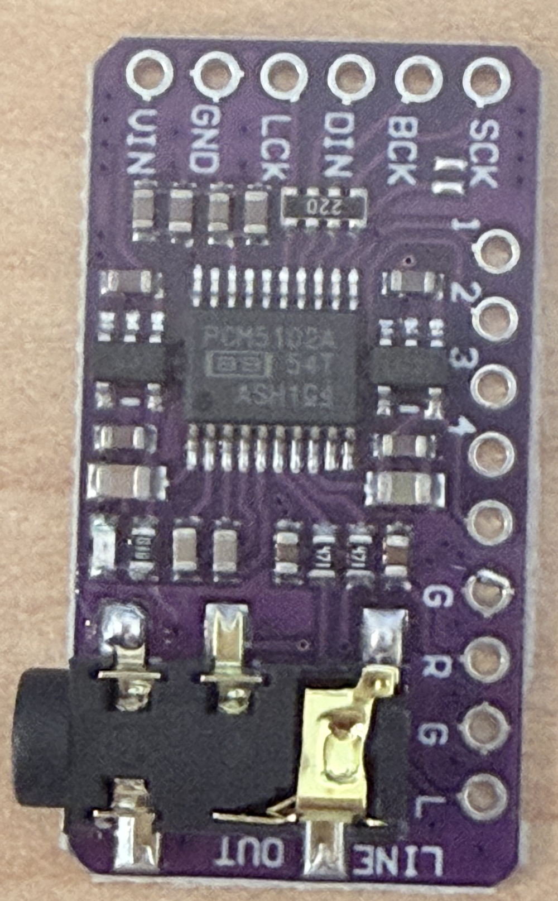
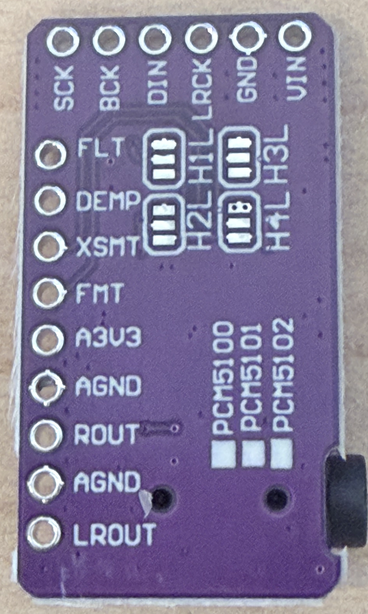

Panasonic RX-5235 “Digital Tape” — build & integration plan
Last verified: 2026-07-18 · Living execution plan · Repo state: documentation only — no firmware, wiring, or boombox change is made by this plan itself
The working plan for replacing the RX-5235's cassette transport with a phone-connected Bluetooth module while preserving the Panasonic radio, front-panel controls, amplifier, and speakers. It reconciles the supplied 22-section build guide with everything this repository has already verified, and it is meant to be used two ways: open on a laptop at the bench, or printed and kept next to the boombox.
1. Scope & ground rules
Goal (v1): the RX-5235's TAPE selector position plays music streamed from a phone over Bluetooth Classic A2DP, through the original Panasonic volume/tone/amplifier/speaker chain. The radio and every other original function keep working. The modification is reversible and serviceable.
- Bench-first bias. The entire digital player — ESP32 board, PCM5102A DAC, display, controls, standalone power — is proven outside the boombox first. The first time the RX-5235 is opened is inspection only, not cutting (Phase 9).
- Three risk domains, kept separate: firmware/wiring risk on the ESP32; audio level/noise risk from the DAC; and vintage-electronics risk inside the Panasonic. A failure in one must not be debugged by poking at another.
- Nothing here authorizes hardware mutation. Flashing, wiring, opening, and powering are deliberate human actions taken at the phase that calls for them, under that phase's prerequisites and stop conditions. As of the last-verified date, no RX-5235 internal modification has been authorized or performed.
- Evidence discipline. Every phase defines what to record (photos, measurements, log excerpts). Claims in this plan are classified per the status legend; anything not established by a primary source or a recorded measurement is marked UNKNOWN/MEASURE, never guessed.
- Repo alignment. Firmware work extends the existing
ESP-IDF v6.0.2 project in this repository (pinned via
.espidf-version, driven byscripts/) — it is not a disconnected side project. See the firmware work breakdown.
Standing prohibitions (they apply in every phase):
- No work on the AC mains side of the RX-5235 power supply, ever.
- No audio injection into tape-head wires, speaker wires, or microphone inputs — wrong signal level, wrong equalization, wrong place (why, in §13).
- No driving of any ESP32 GPIO until it has been checked against the official Q125/V18 pinout, the official schematic, boot-strap behavior, header exposure, and onboard circuits (wiring tables, §10).
- No bulk flash erase; no eFuse writes; flash backups never enter git (hardware safety rules).
- Boombox internal work only with AC unplugged and batteries removed, except deliberate powered measurements defined in §12.
2. What success looks like
The project is done when all of the following hold with the case closed (the objective checklist with evidence fields is in §18):
- Boombox powers on normally on AC (and battery, if battery operation is retained); radio works exactly as before.
- Selecting TAPE plays phone audio; volume, tone, and balance controls shape it; left/right channels are correct.
- Bluetooth pairing and reconnect are dependable from across a room with the case closed.
- No objectionable hum, whine, ticking, or turn-on pop at normal listening volume.
- The module powers up and down with the boombox power switch.
- The display sits square in the cassette window and shows connection state, playback state, and (when the phone provides it) track metadata.
- The original transport keys (or an equivalent deliberate control choice) drive play/pause and track skip.
- Everything is serviceable: USB access without disassembly, fused power tap, labeled connectors, a service label inside the battery compartment, and a documented restore path back to stock behavior.
3. Status legend
Every fact, wiring row, milestone, and step in this plan carries one of these classifications. The chip text is the classification; color only reinforces it.
- CONFIRMED
- Established by a primary source (official documentation, datasheet, user-supplied product identification) or a recorded measurement on our actual hardware. Citations sit next to the claim.
- COMPLETED
- Work that has already been done, with recorded evidence (file paths, hashes, log output). Do not redo it; verify the evidence instead.
- CONDITIONAL
- Valid only under a stated assumption — most commonly “if the official T-Display V18 pin table applies to our physical unit and the pin survives the schematic/strap review.” Never wire from a CONDITIONAL row.
- UNKNOWN / MEASURE
- Not established by any primary source. The plan defines how to measure or identify it. Never filled in from forum lore or generic repair habits.
- BLOCKED / HOLD
- Deliberately not started — prerequisites unmet or authorization not given. Each blocked item names what unblocks it.
- FUTURE OPTION
- Explicitly out of scope for v1; recorded so it isn't designed out by accident (e.g. AVRCP cover art, OTA updates, Wi-Fi streaming).
4. Current-state snapshot (corrects the source guide)
The supplied build guide was written before this repository's recent work landed, so several of its instructions are phrased as future work that is already done. This table is the authoritative state as of 2026-07-18. When the guide and this table disagree, this table wins.
| Item | Status | Detail / evidence |
|---|---|---|
| ESP32 silicon identity | CONFIRMED | ESP32-D0WDQ6-V3, revision v3.1, dual-core Xtensa LX6, 40 MHz
crystal — read-only esptool probes
(hardware notes,
chip architecture). |
| External flash | CONFIRMED | Winbond 16 MB SPI, 3.3 V (flash-id,
read-only). |
| USB–UART bridge | CONFIRMED | WCH CH9102 family. Port observed as
/dev/cu.usbserial-5B1F0057851 — rediscover
every session with ls /dev/cu.*; the name can
change. Long transfers unreliable above 230400 baud (921600 and
460800 both failed; 230400 completed) — measured, recorded in
hardware safety rules. |
| Carrier board product identity | CONFIRMED | User-confirmed and official-source-corroborated: LILYGO T-Display, Q125 variant (16 MB, no shell), classic ESP32, CH9102 — see the official product page and hardware notes. The product-page “V18” pin table now applies to our physical unit: the 2026-07-17 silkscreen (T-Display V1.1) and the photographed header labels both match it. The M2 I2S rows in §10.4 have since passed review and were wired on 2026-07-18; other pin-dependent work remains individually gated. |
| Physical unit silkscreen / revision photo | CONFIRMED | Both sides photographed 2026-07-17; privacy-stripped copies filed
in the hardware notes. Front
silkscreen reads MODEL: T-DISPLAY V1.1,
FCC ID 2ASYE-T-DISPLAY, PCB artwork date
19-6-28 (2019-06-28), XY-CP — the
physical PCB revision is V1.1, corroborating the
Q125 identity with no contradiction (the Phase 0
stop condition is not triggered). Header-exposed GPIOs were read
directly from the back silkscreen (Phase 0). |
| Factory flash backup | COMPLETED | Full 16 MB pre-write backup exists:
~/Library/Application Support/Boombox/backups/boombox-flash-backup-20260717-144304-16MB.bin,
16,777,216 bytes, SHA-256
421c15e933a66b08854675fbaa82762d52c0079de40be804d78a618a8c7a310a.
Do not instruct or perform another pre-write backup as if
none exists. Restore procedure: §16. |
| Toolchain (ESP-IDF v6.0.2 pinned) | COMPLETED | Installed and pinned via .espidf-version;
scripts/doctor.sh and scripts/build.sh
pass (setup research). |
| First flash + smoke test | COMPLETED | Board-neutral, UART-only smoke app flashed at 230400 baud with hash verification and no bulk erase, after the backup above. Observed six stable 5-second heartbeats on the serial monitor. The factory demo firmware is therefore already overwritten (and preserved in the backup). |
| Pin-dependent firmware work | M2 CORE AUDIO PASS | The documentary pin-conflict review is complete for M2: I2S map B (BCK 26 / LRCK 27 / DATA 25) is confirmed conflict-free on this unit against the official schematic and the photographed header (§10.4), and the user completed that wiring with a common ground on 2026-07-18. Powered DAC readings close the module-side gate: A3V3 3.25 V; FLT/DEMP/FMT about 0.3 V (low); XSMT 3.25 V after its A3V3 jumper; SCK 0 V after its ground jumper. The M1 Bluetooth transport test was itself zero-GPIO — the A2DP example's Idle output — and has now PASSED (2026-07-18). The deliberate M2 flash has also completed: boot, A2DP reconnect, 44.1 kHz external-I2S configuration, and five packet-bearing playback cycles passed. A 60-second 1 kHz tone was then audible through the PCM5102A and a proven Onn AUX speaker/cable; powered BCK/LCK/DIN readings each averaged about 1.5 V DC during playback. The board is left running the M2 image. All GPIO outside the three verified M2 pins remains gated. |
| PCM5102A module variant | MODULE IDENTIFIED JUMPER MAP VERIFIED POWERED STATE VERIFIED | Photographed both sides 2026-07-17 (Phase 2). It is the purple GY-PCM5102 shared-PCB module (PCM5100/5101/5102 selection legend) populated with a genuine-marked TI/Burr-Brown PCM5102A; power appears consistent with VIN → onboard 3.3 V LDO → the PCM5102A with a ground-centered line output (TI DirectPath — no DC-blocking caps), though the exact regulator and VIN range are not verified. Chip facts stay CONFIRMED from TI docs (§13). Verified physical connectivity (unpowered meter, 2026-07-17): H1L→FLT, H2L→DEMP, H3L→XSMT, H4L→FMT; each jumper's L pad ties directly to ground; all four solder jumpers read open/unbridged. Powered bench measurements (2026-07-18): A3V3 = 3.25 V; FLT/DEMP/FMT ≈ 0.3 V (logic low); XSMT was initially ≈0.3 V (muted), then 3.25 V after a temporary XSMT-to-A3V3 jumper; SCK was not originally hard-grounded, then measured 0 Ω unpowered and 0 V powered after an SCK-to-GND jumper. The exact regulator part and general VIN range remain unknown, but the M2 bench configuration is measured and ready. |
| RX-5235 internals (rails, selector, dimensions) | UNKNOWN / MEASURE | No official Panasonic service documentation found in official distribution (checked 2026-07-17; aftermarket originals exist — source register). Everything internal is established only by the §12 worksheets. |
| RX-5235 opening / modification | BLOCKED / HOLD | Not authorized and not performed. Unblocks at Phase 9 only after milestones M0–M6 pass. |
5. Architecture overview
The v1 signal chain, end to end. Solid boxes are interfaces we control and can verify on the bench; dashed boxes are interfaces inside the RX-5235 that are unknown until measured. The digital module up to line-level output is provable entirely outside the boombox — that boundary is the heart of the bench-first rule.
- Phone music app any A2DP-capable phone; also the source of AVRCP metadata/commands when the app provides them
- Bluetooth Classic A2DP (SBC) classic BT — supported by our BT 4.2 BR/EDR + BLE dual-mode ESP32; one source at a time
- LILYGO T-Display (classic ESP32, user-confirmed Q125 16 MB) runs A2DP sink + AVRCP + UI; ST7789 1.14″ 135×240 display in the cassette window
- I2S digital audio (BCK / LRCK / DIN, 3-wire) verified map B (26 / 27 / 25) passed the §10 schematic + photographed-header review and was bench-wired on this unit 2026-07-18. Philips I2S timing is required because measured FMT is low; 44.1 kHz 16-bit stereo for the initial test
- PCM5102A stereo DAC module chip CONFIRMED: 2.1 VRMS ground-centered line output, internal PLL from BCK (no SCK wire); module identified as the purple GY-PCM5102 carrier, jumper-to-pin map verified by meter (all four jumpers open); powered defaults measured, XSMT jumpered high, and SCK jumpered to ground
- Attenuation / isolation network UNKNOWN / MEASURE — series/shunt values are hypotheses until the RX-5235 input level is measured (§13)
- RX-5235 TAPE source path, at selector level UNKNOWN / MEASURE — injection point chosen only after the §12 worksheets; after the tape preamp/EQ, never the tape head
- Original Panasonic volume / tone / amplifier / speakers untouched; this is the point of the whole project
Power (final install): RX-5235 switched low-voltage DC rail (voltage UNKNOWN / MEASURE) → fuse → 5 V buck converter → optional LC/ferrite filter → T-Display 5 V input → PCM5102A supply per its module docs. Full power design in §14. Until Phase 12, the module runs from USB or a bench supply only.
6. Milestone dashboard (M0–M12)
Milestones gate each other — do not combine them, and do not open the boombox before M7. “Rollback point” is the state you can always return to if that milestone goes wrong.
| Milestone | Result | Present status | Prerequisites | Exit evidence | Rollback point | Open boombox? |
|---|---|---|---|---|---|---|
| M0 | Board physically verified + pin review done (backup already exists) | PASS — 2026-07-18 — backup, toolchain, smoke flash, product identity, silkscreen, schematic review, module powered-state check, and the §10.4 I2S bench sign-off are complete. The optional TFT_RST continuity check is not an M0 blocker. | none | Silkscreen photos; schematic-resolved TFT_RST; filled verified pin table | n/a (read-only work) | No |
| M1 | ESP32 advertises as a Bluetooth speaker — detailed USB-only bring-up plan | PASS — 2026-07-18 —
run bench-side, zero GPIO (Idle output), no DAC connected. The A2DP
source was the development Mac (via the bounded
bthelper helper + macOS Bluetooth/Audio, not a phone —
stated transparently). All 8 evidence rows pass, including a
from-scratch forget/re-pair that required one human tap to confirm
the OS's SSP pairing dialog (no public API lets a bare CLI
auto-answer it). Full record:
M1 evidence
checklist. Board left running the M1 build deliberately. |
Verified backup + working toolchain + Bluetooth-capable board (all confirmed); Phase 3 in Idle-output mode. Not the §10.4 DAC pin review — M1 drives no pins. | Mac (A2DP source) discovered the device name and connected;
monitor showed Connected + rising
Audio packet count across three sessions (100→600,
100→1400, 100→2400); log excerpts saved
(M1 evidence
checklist) |
Reflash smoke app; factory state restorable from backup | No |
| M2 | A2DP-source audio plays via PCM5102A into an external amp | PASS — 2026-07-18 — M1 passes; DAC powered state is measured; XSMT is jumpered high; SCK is grounded; BCK/LRCK/DIN = 26/27/25 is wired. The audited M2 build uses Philips timing to match measured FMT low. Ordinary flash, boot, A2DP reconnect, 44.1 kHz I2S configuration, and five packet-bearing playback cycles pass. The development Mac was the A2DP source for this core proof (not a phone). The user heard a continuous 1 kHz tone through the PCM5102A and a proven Onn AUX speaker; BCK/LCK/DIN each averaged about 1.5 V DC during playback. | M1; Phase 2, Phase 4 | Serial Connected/Started/packet evidence;
audible 60-second tone through external AUX speaker; powered I2S
activity readings recorded |
Unplug DAC; module unchanged | No |
| M3 | Screen shows RX-5235 UI while audio plays cleanly | BLOCKED / HOLD — Gate A (extended Phase 4 qualification) needs a live human bench session; Gate B display-only firmware is code/build-complete but not yet flashed or physically observed (2026-07-20) | M2; Gate A, Phase 5, Gate B | Display/audio coexistence matrix passes | Disable UI task; audio-only build tagged
audio-only-m2-gate-a in git |
No |
| M4 | Bench buttons drive play/pause/next/previous | BLOCKED / HOLD | M3; Phase 6 | AVRCP command log excerpts; debounce notes | Remove buttons; audio+UI build unaffected | No |
| M5 | Module runs from standalone buck-converted 5 V | BLOCKED / HOLD | M4; Phase 7; buck purchased per §9 criteria | Power test matrix passes; measured current draw recorded | Return to USB power | No |
| M6 | Cassette-bay mockup looks intentional | BLOCKED / HOLD | M5; Phase 8 | Mockup photos; chosen mounting decision recorded in the decision log | Cardboard only — nothing to roll back | No (outside measurements only) |
| M7 | RX-5235 opened for inspection only | BLOCKED / HOLD — also requires explicit go decision | M0–M6 all passed; Phase 9 | Complete §12 photo inventory; boombox restored and radio re-verified | Close it up — nothing was cut | Yes — inspection only |
| M8 | Module proven through an external AUX/LINE input, if the RX-5235 has one | BLOCKED / HOLD — existence of such an input is UNKNOWN / MEASURE | M7 (to know the inputs); Phase 10 | Level comparison vs radio recorded | Unplug cable | Maybe; not required |
| M9 | Cassette mechanism removed reversibly | BLOCKED / HOLD | M7; Phase 11A; §12 worksheets complete | Photos before/after; radio re-verified with mechanism out; removed parts bagged and labeled | Reinstall mechanism (nothing cut, connectors intact) | Yes |
| M10 | Audio injected at the TAPE/selector path | BLOCKED / HOLD | M9; Phase 11B; §13 measurements done | TAPE plays phone audio; RADIO unaffected; injection point + values recorded in the decision log | Undo at the reversible disconnect point chosen in 11B | Yes |
| M11 | Internal switched-rail power works cleanly | BLOCKED / HOLD | M10; Phase 12; §14 measurements done | On/off tracks power switch; noise floor acceptable; fuse + measured voltages/current recorded | Disconnect tap; module back to USB power | Yes |
| M12 | Final mount, cassette-key controls, service label, closed-case verification | BLOCKED / HOLD | M11; Phase 13, Phase 14 | §18 acceptance checklist complete with evidence fields filled | Module removable; restore path documented in §16 | Yes |
7. Next three moves
A truthful current-state dashboard, honest to 2026-07-18. The backup exists, the toolchain works, the smoke app is flashed, the board's product identity is confirmed, and — new this round — both the T-Display board and the PCM5102A module have been photographed and read (privacy-stripped copies: board front/back · module front/back). That evidence advances all three moves; each move below states what is done, what remains, and the exact next input — separating documentary progress from the hardware-gated steps the photos cannot settle.
-
Photograph and physically verify the board. EVIDENCE COMPLETE 1 BENCH ITEM OPEN
- Done: both sides shot in good light; silkscreen
reads T-Display V1.1,
FCC ID 2ASYE-T-DISPLAY, PCB date 19-6-28,XY-CP— no contradiction with the Q125 identity. The only published T-Display schematic (ESP32-TFT(6-26).pdf, 2019-06-26 artwork — consistent with, not proof of, this PCB's 19-6-28) was read and TFT_RST resolves to GPIO23 — the product page's “N/A” is a catalog omission (§10.1). The header-exposed GPIO set was read directly off the back silkscreen and cross-checks the V18 table (Phase 0). - Remaining (hardware): the RST-to-23 trace runs on an inner layer and GPIO23 is not broken out to a header, so the photos cannot prove it on this board — the schematic is the arbiter, and a continuity check (display RESET pad ↔ ESP32 GPIO23) is the only physical proof.
- Next input: none needed to proceed — Phase 0's documentary half is complete; the continuity check is an optional Phase 3/4 bench confirmation, not a blocker.
- Done: both sides shot in good light; silkscreen
reads T-Display V1.1,
-
Identify the exact PCM5102A module. MODULE IDENTIFIED JUMPER MAP VERIFIED POWERED STATE VERIFIED
- Done: photographed both sides 2026-07-17. It is the purple GY-PCM5102 shared-PCB module (PCM5100/5101/5102 selection legend) populated with a genuine-marked TI/Burr-Brown PCM5102A; every I2S/config/output label transcribed; power appears consistent with VIN → onboard 3.3 V LDO → the PCM5102A with a ground-centered line-out. The exact regulator and general VIN range remain unknown, while the powered A3V3 rail is now measured (Phase 2).
- Also done (unpowered meter, 2026-07-17): the four
config solder-jumpers are mapped and read directly with a meter —
H1L→FLT,H2L→DEMP,H3L→XSMT,H4L→FMT; each jumper's L pad ties directly to ground; and all four solder jumpers are open/unbridged. This is verified physical connectivity, not a powered logic state. - Done (powered bench, 2026-07-18): A3V3 measured 3.25 V; FLT/DEMP/FMT measured about 0.3 V (logic low); XSMT was initially about 0.3 V, then 3.25 V after a temporary XSMT-to-A3V3 jumper; SCK was not originally hard-grounded, then read 0 Ω unpowered and 0 V powered after an SCK-to-GND jumper. This selects normal-latency filtering, de-emphasis off, Philips I2S, soft-unmute, and internal-PLL operation. The general VIN rating remains undocumented; that uncertainty is separate from the now-measured bench configuration.
-
Run the pin conflict review, then build the bench A2DP/DAC test. REVIEW: DAC PINS PASS M1 BENCH PASS M2 CORE AUDIO PASS
- Done (documentary): candidate map B —
BCK 26, LRCK 27, DATA 25 (the v6.0.2
a2dp_sink_streamdefaults) — was checked against the schematic, the photographed header, the input-only list, and the strapping-pin list: all three pins are exposed, physically adjacent on the left header, output-capable, non-strapping, and not board-consumed. No onboard conflict on this unit. The §10.4 verified table is filled for BCK/LRCK/DATA accordingly. - Done (bench): M1 (Phase 3) ran 2026-07-18 — USB-only flash of the example in Idle output, no module/pins/DAC involved, source was the development Mac (not a phone). All 8 evidence rows PASS, including a from-scratch re-pair after one human SSP-dialog confirmation. See the M1 Bluetooth bring-up plan and its evidence checklist.
- Done (M2 preparation, 2026-07-18): powered DAC measurements close the module-config gate; the user wired BCK 26, LRCK 27, DIN 25 and common ground. Source audit found that ESP-IDF v6.0.2's stock external-codec path uses MSB/left-justified timing, which conflicts with measured FMT low. The M2 bench build therefore uses the driver's Philips slot macro at both initialization and runtime reconfiguration.
- Done (M2 digital path, 2026-07-18): read-only board
identity and the preserved backup were reverified; one ordinary
explicit flash completed with per-region hash verification and no bulk
erase. The development Mac reconnected, the external-I2S service
configured at 44.1 kHz, and five low-volume trials each showed
Started, I2S ringbuffer processing, packet count 100, andSuspended. Mac audio output was restored afterward. - Done (M2 physical output, 2026-07-18): a valid control proved the powered Onn speaker, AUX mode, and cable from the Mac headphone output. With that same cable returned to the PCM5102A, the user heard a 60-second 1 kHz tone. A3V3 and XSMT both measured 3.25 V, while BCK/LCK/DIN each showed about 1.5 V DC average activity during playback. A powered-speaker retest of the earlier short 0.35-volume chimes was not heard; no cause is asserted. The sustained tone closes the core end-to-end M2 proof, while transient/level behavior remains in the extended matrix.
- Remaining Phase 4 qualification: stereo orientation, multi-app, noise, level, and long-run matrix rows. These are not part of the completed M2 core proof and remain required before display work.
- Next input: extended Phase 4 audio qualification when the user chooses to continue.
- Done (documentary): candidate map B —
BCK 26, LRCK 27, DATA 25 (the v6.0.2
A full flash backup already exists and is verified — do not take another “first” backup; verify the recorded SHA-256 instead (§16).
8. Phase catalog
Every phase from the source guide, enriched with what this repository has verified. Each phase states purpose, prerequisites, hazards, steps, what to record, pass/fail, stop conditions, rollback, artifacts, and what depends on it. Phases must be worked in order unless a phase explicitly says it can run in parallel.
Phase 0 — Verify the physical board against the confirmed identity
IDENTITY CONFIRMED DOCUMENTARY VERIFY COMPLETE TRACE CONTINUITY OPEN (bench)
- Purpose
- Anchor every later pin decision to the actual unit in hand, not to a product page alone.
- Milestone
- M0 (with the already-completed Phase 1 items)
- Prerequisites
- None — start immediately.
- Hazards
- None; this phase is read-only (camera + documents). Do not probe pins electrically.
- Rollback
- n/a — nothing is modified.
- Artifacts
- Board photos (both sides, privacy-stripped — hardware notes), the cited official schematic, updated hardware notes and §10 verified pin table.
- Feeds
- Every pin-dependent phase (3, 5, 6) and the wiring tables.
What is already established. The user supplied the official LILYGO product page for this board: T-Display, classic ESP32, CH9102, variant 16MB [Q125] — which matches every measured fact we hold (classic ESP32-D0WDQ6-V3 die, CH9102 bridge, Winbond 16 MB flash, BT 4.2 + BLE). The product page's “V18” pin table is recorded in §10. The silicon-vs-carrier distinction stays deliberate: the die facts are measured; the product identity is user-confirmed and corroborated; and the physical PCB revision is now established as V1.1 from the 2026-07-17 silkscreen photos (Evidence, below).
Evidence recorded (2026-07-17). Documentary steps 1–6 below are complete. Full-resolution photos of both sides, with the transcription and privacy-sanitization record, are in the hardware notes. Highlights:
- Silkscreen (directly legible): front —
LILYGO®,FCC ID 2ASYE-T-DISPLAY,MODEL: T-DISPLAY V1.1, PCB block19-6-28/V1.1/XY-CP, a40.000 MHzcrystal; back — aTTGOlabel and the two 12-pin header rows. No contradiction with the T-Display / Q125 identity. - Schematic (primary arbiter): the official repo
publishes exactly one T-Display schematic,
ESP32-TFT(6-26).pdf;
that, plus the board's own
T-Display V1.1self-ID, makes it the applicable official schematic for this product (its 2019-06-26 artwork sits two days before this PCB's 19-6-28 date — corroborating colour, not proof of an exact revision match). Its display connector wires TFT_RST to GPIO23 — resolving the product page's “N/A” vs the repo README's GPIO23 in favour of GPIO23 (§10.1). GPIO23 is therefore consumed by the display reset and is not free for reuse — though it is moot for the DAC, being off-header. - Header-exposed GPIOs (read off the back silkscreen):
{2, 12, 13, 15, 17, 21, 22, 25, 26, 27, 32, 33, 36, 37, 38, 39}plus 5V, 3V3, and GND. This set is the exact complement of the V18 board-consumed pins — none of the TFT pins (4, 5, 16, 18, 19, 23), buttons (0, 35), battery-ADC (34), ADC-enable (14), or flash pins (6–11) appear on a header. The physical unit therefore corroborates the official V18 table. - Inference vs direct evidence: the SoC laser mark,
the SOIC-8 flash body mark, and the USB-UART bridge mark are
not legible at the photo resolution —
ESP32-D0WDQ6-V3,W25Q128 (16 MB), andCH9102rest on the read-onlyesptool/USB probes and the product page, not on a readable die mark (see hardware notes).
Steps (documentary steps 1–6 complete 2026-07-17; results in Evidence above).
- Photograph both sides of the board in good light; file the photos with the project record (§18).
- Read the silkscreen. Expect
T-Display(orTTGO T-Display) plus a revision mark; record exactly what it says, including nothing. - Cite the official schematic PDF in the Xinyuan-LilyGO/TTGO-T-Display repository (it also carries factory-test firmware, board files, and 3D files) as the pin-map arbiter; keep an offline copy with the project record if bench work will run without a network.
- From the schematic, resolve TFT_RST: the current product page lists N/A while the repository README lists GPIO23. Do not silently pick one — record what the schematic shows and which physical revision it applies to. (Resolved: GPIO23.)
- From the schematic plus the physical header, list which GPIOs are actually exposed on the two header rows, and which are consumed by display, buttons, and the ADC power circuit (V18 table).
- Record all findings in hardware notes and fill the verified pin table only with what the schematic + physical unit support.
Record: silkscreen text verbatim (T-Display V1.1, FCC ID 2ASYE-T-DISPLAY, 19-6-28, XY-CP); header GPIO set (16 signals + power/GND); schematic file name/source URL (ESP32-TFT(6-26).pdf) and its 2019-06 artwork date.
Pass (met): photos on file; silkscreen consistent with T-Display; TFT_RST resolved from the schematic (GPIO23); header exposure list written; verified pin table started (§10.4). Remaining physical confirmation — a continuity check of the display RESET pad to GPIO23 — is an optional bench step, not a documentary blocker.
Stop condition: if the silkscreen or schematic contradicts the T-Display identification, halt all pin-dependent planning, mark the board identity UNKNOWN again, and re-identify before proceeding. Keep work read-only (UART, esptool probes) meanwhile. (Not triggered: the silkscreen and schematic both corroborate the identity.)
Phase 1 — Toolchain and factory backup
COMPLETED — historical record; verify, don't redo.
- Purpose
- Build/flash capability with the factory firmware preserved first.
- Milestone
- M0 (completed half)
- Evidence
- Backup
~/Library/Application Support/Boombox/backups/boombox-flash-backup-20260717-144304-16MB.bin— 16,777,216 bytes, SHA-256421c15e933…a310a(full hash in §4), taken before the first write. ESP-IDF v6.0.2 pinned and healthy (scripts/doctor.shpasses). Board-neutral smoke app flashed at 230400 baud with hash verification, no bulk erase; six stable 5-second heartbeats observed on the monitor. - Feeds
- All firmware phases; the restore path in §16.
What remains in this phase (verification only):
- Confirm the backup file still exists and its SHA-256 still equals
the recorded value (
shasum -a 256 <file>). - Each session, rediscover the serial port with
ls /dev/cu.*— the recorded/dev/cu.usbserial-5B1F0057851is an observation, not a constant. - Run
scripts/doctor.shbefore any build session.
Pass: hash matches; doctor passes. Stop condition: if the hash does not match, treat the backup as compromised — stop all flash-writing work until a trustworthy copy or a new deliberate decision exists. Do not overwrite the backup file.
Phase 2 — Identify the PCM5102A module and prepare bench wiring
CHIP FACTS CONFIRMED MODULE IDENTIFIED JUMPER MAP VERIFIED POWERED STATE VERIFIED
- Purpose
- Turn “a PCM5102A module” into a documented part with a known power topology and strap configuration, wired on the breadboard with no boombox connection.
- Milestone
- Feeds M2
- Prerequisites
- None (can run in parallel with Phase 0). Wiring to the ESP32 happens only after the §10 verified map exists.
- Hazards
- Back-powering or 5 V-into-3.3 V mistakes; see rules below. No mains, no boombox involvement at all.
- Rollback
- Unplug — breadboard only.
- Artifacts
- Module photos (both sides, privacy-stripped — below), its documentation links, a filled power-topology note, and the wiring plan merged into §10.
- Feeds
- Phases 3–4; the attenuator design in §13.
Chip facts (CONFIRMED — TI product documentation, see sources): stereo DAC, 112 dB SNR, 2.1 VRMS ground-centered line output via DirectPath charge pump (no DC-blocking capacitors required, drives loads down to 1 kΩ), 8–384 kHz sample rates, 16/24/32-bit data, I2S or left-justified formats, 3.3 V analog supply, and an integrated PLL that generates the system clock from BCK — so v1 uses a 3-wire I2S connection (BCK, LRCK/WS, DIN) with no MCLK wire.

VIN·GND·LCK·DIN·BCK·SCK; chip marked
PCM5102A / Burr-Brown / 54T /
ASH1G4. GPS/EXIF stripped; visible pixels unchanged.

H1L–H4L = FLT / DEMP / XSMT / FMT; variant legend
PCM5100 / PCM5101 / PCM5102. Jumper-to-pin map and
open/unbridged state confirmed by unpowered meter (below), not read off
the photo. GPS/EXIF stripped; visible pixels unchanged.
Module identified (2026-07-17): the ubiquitous purple
GY-PCM5102 shared-PCB I2S DAC module (one board covers
PCM5100/5101/5102 via the selection legend), populated with a
genuine-marked TI/Burr-Brown PCM5102A. Labels transcribed:
I2S header VIN·GND·LCK·DIN·BCK·SCK (LCK ≡ LRCK); config/output
header FLT·DEMP·XSMT·FMT·A3V3·AGND·ROUT·AGND·LROUT; config
jumpers H1L/H2L/H3L/H4L.
Verified physical connectivity (unpowered bench meter, 2026-07-17):
each jumper's centre pad reads through to its config pin —
H1L→FLT, H2L→DEMP,
H3L→XSMT, H4L→FMT — and each jumper's L pad
connects directly to ground. All four visible solder jumpers read
open/unbridged. By the module's H-number silkscreen
convention the middle pad is the config pin, the bottom L pad is GND, and the
top H pad is the 3V3 option; only the centre-pad-to-config-pin and
L-pad-to-ground connections were meter-checked here — the H-pad-to-3V3 tie was
not separately verified. These are resistance/continuity facts taken with the
module unpowered; they establish wiring, not operating logic levels.
Power topology (appears consistent with — not verified off the photo
or a powered rail): the photo shows the
VIN / GND / A3V3 / AGND pads and regulation-associated passives,
but the regulator part is unreadable; the layout appears consistent
with the GY-PCM5102 design in which VIN feeds an onboard 3.3 V LDO
that supplies the PCM5102A — the exact regulator and the accepted VIN range
are not verified. The chip's output is TI DirectPath — a
ground-centered (≈0 V DC-biased) 2.1 VRMS line level on
ROUT/LROUT and the 3.5 mm jack that needs no external DC-blocking
capacitors (TI SLAS859C). Powered bench result
(2026-07-18): A3V3 measured 3.25 V. The exact regulator part
and its general safe VIN range remain undocumented; never back-power the
ESP32 from the module's A3V3 pad.
Powered configuration verified (2026-07-18): FLT,
DEMP, and FMT each measured about 0.3 V (logic low). XSMT initially
measured about 0.3 V, confirming the unjumpered module was muted, then
measured 3.25 V after a temporary XSMT-to-A3V3 jumper. SCK was not
originally hard-grounded; after an SCK-to-GND jumper it measured
0 Ω unpowered and 0 V powered. These readings select normal
latency (FLT low), de-emphasis off (DEMP low), Philips I2S (FMT low),
soft-unmute (XSMT high), and internal-PLL operation (SCK grounded).
Firmware consequence: ESP-IDF v6.0.2's stock external-I2S
example uses its MSB/left-justified macro, so the M2 image must instead use
I2S_STD_PHILIPS_SLOT_DEFAULT_CONFIG at initialization and on
stream reconfiguration. The stock source unchanged is not a valid match
for this measured FMT state.
Steps (1–4 complete; 5–6 completed for the I2S side on 2026-07-18; the external line-output hookup is the remaining Phase 4 action).
- Photograph the module both sides; transcribe every silkscreen label and solder-pad group. (Done — see photos above.)
- Identify the variant (commonly sold as GY-PCM5102) and locate its documentation; save a copy with the project record. (Done — GY-PCM5102 / PCM5102A; see sources.)
- Determine the power topology:
- Module has only
VCCrated 3.3–5 V → plan to feed it from the T-Display 5 V/USB rail on the bench. - Module has a dedicated
3V3input → use 3.3 V only if its docs say input. - Module has both → typically VCC is input, 3V3 is the onboard regulator's output. Never back-power the ESP32 from the module's 3V3 pad.
- Module has only
- Determine each config pad's state (FLT/DEMP/XSMT/FMT, SCK-to-GND) by reading the pads and measuring them; record them. (Jumper topology verified by unpowered meter 2026-07-17 — H1L→FLT, H2L→DEMP, H3L→XSMT, H4L→FMT, all L pads to ground, all four jumpers open. Powered readings completed 2026-07-18: FLT/DEMP/FMT low; XSMT high after its A3V3 jumper; SCK grounded.)
- Prepare the output side: 3.5 mm stereo breakout or RCA pigtail — LOUT→tip/left-center, ROUT→ring/right-center, module GND→sleeve/shields. (Bench.)
- Dry-fit breadboard wiring with short leads; do not connect to the ESP32 until the §10 verified map exists. (Done 2026-07-18: GPIO26→BCK, GPIO27→LCK, GPIO25→DIN, common ground.)
Record: module variant (GY-PCM5102 / PCM5102A); pin
labels (transcribed above); verified jumper map (unpowered meter, 2026-07-17 —
H1L→FLT, H2L→DEMP, H3L→XSMT, H4L→FMT; all L pads to
ground; all four jumpers open); supply plan (the layout appears consistent
with VIN → onboard 3.3 V LDO → the PCM5102A, but the
exact regulator and general VIN range are not verified; measured A3V3 is
3.25 V and must never back-power the ESP32); powered states
(FLT/DEMP/FMT low, XSMT high after A3V3 jumper, SCK grounded); photo
references (PCM5102A_front.png,
PCM5102A_back.png). The general VIN rating remains a module
documentation gap, not an unmeasured M2 strap state.
Pass: module documented and its pin labels transcribed into the §10 candidate map; jumper map verified by meter; powered configuration recorded; M2 I2S wiring follows only the verified §10.4 map; firmware format matches measured FMT low. The external amp/output observation remains Phase 4 evidence, not a Phase 2 gate.
Stop conditions: module cannot be identified and its pads are ambiguous → do not power it; acquire a documented module instead (§9 lists criteria). Never put 5 V on any ESP32 GPIO; never power anything from an unmeasured pin.
Phase 3 — Flash the known-good A2DP sink example
PASS — 2026-07-18 — run as a USB-only bench session; the detailed run record is the M1 Bluetooth bring-up plan (evidence checklist). This phase configured no pins (see Prerequisites), so it did not wait on the §10 pin review. Example identity verified against the pinned ESP-IDF version. The development Mac stood in for the phone as the A2DP source (bounded local automation); no phone was used.
- Purpose
- Prove the Bluetooth transport: make the ESP32 discoverable as a Bluetooth speaker and confirm a phone pairs, connects, and streams, using Espressif's reference code — before any custom firmware or DAC exists. Audio output is not part of this phase.
- Milestone
- M1
- Prerequisites
- Phase 1 evidence verified (backup + toolchain) and a Bluetooth-capable board (confirmed). Not Phase 0's DAC pin review and not Phase 2: the M1 build selects the example's Idle output and configures zero GPIO, so no verified pin map or DAC format is needed. (Phase 2 and the pin review gate Phase 4 / M2, not this phase.)
- Hazards
- Flashing overwrites the current app (factory firmware is already preserved in the backup). No GPIO is driven — the Idle output configures no I2S or DAC pin.
- Rollback
- Reflash the repo smoke app; or restore the factory image from backup (§16).
- Artifacts
- The bench project directory (outside this repo until §15 folds the code into components), chosen sdkconfig deltas, monitor log excerpt.
- Feeds
- Phase 4; the firmware breakdown §15.
Verified example facts (ESP-IDF v6.0.2, our pinned
version): the classic-BT A2DP sink example is
examples/bluetooth/bluedroid/classic_bt/a2dp_sink_stream.
Its stock default outputs I2S with defaults BCK GPIO26,
LRCK GPIO27, DATA GPIO25 and advertises as
ESP_SPEAKER; the “A2DP Sink Output” menuconfig
choice offers external I2S, internal DAC (an 8-bit fallback), and an
Idle Output that discards the audio and configures no pins.
M1 uses the Idle output (zero GPIO, verified in the v6.0.2
source — see the M1 strategy
section); the external-I2S path with the PCM5102A is
Phase 4 / M2. Source audit on 2026-07-18 found
that this stock path uses I2S_STD_MSB_SLOT_DEFAULT_CONFIG
(left-justified, no one-bit shift), while this module's measured FMT-low
state requires Philips I2S. M2 therefore carries a local two-call-site
change to I2S_STD_PHILIPS_SLOT_DEFAULT_CONFIG; the pinned IDF
checkout remains untouched. AVRCP is exercised by separate v6.0.2
examples (avrcp_ct_metadata,
avrcp_absolute_volume, avrcp_ct_cover_art) —
used in Phase 6.
Version/format drift warning. Older
third-party tutorials reference an a2dp_sink example with
bundled AVRCP handling; at v6.0.2 the example tree is as stated above
(no plain a2dp_sink exists there — the supplied guide's §7
already names a2dp_sink_stream correctly). Note the I2S
pin defaults and the DAC/I2S output choice live in a shared
classic_bt/common component menu (“A2DP Sink
Internal Codec Example Configuration”) at this version, not in
the example's own Kconfig — read exact option names from
menuconfig in the checked-out pinned tree rather than from
memory or third-party posts, and flag any mismatch in the decision
log.
Steps.
- From the pinned environment, instantiate the example:
idf.py create-project-from-example "bluetooth/bluedroid/classic_bt/a2dp_sink_stream"(path per the v6.0.2 tree), thenidf.py set-target esp32. - In
menuconfig: select the Idle Output under “A2DP Sink Output” so the decoded stream is discarded and no I2S pin is configured — this keeps M1 at zero GPIO; set the device name toRX-5235 Digital Tape. Switching to the external-I2S path and the verified BCK/LRCK/DATA assignment is Phase 4 / M2, not this phase. - Build; then flash deliberately over a direct data-capable cable
(
idf.py -p <port> flash monitor). Normalidf.py flashdoes not bulk-erase; keep it that way. - Watch the monitor for BT stack start and connection events; pair from the phone.
Record: sdkconfig deltas from stock, device name, monitor excerpt of a successful pairing.
Pass — met 2026-07-18: the A2DP source (development
Mac) saw RX-5235 Digital Tape, paired, and the monitor logged
A2DP audio state: Started with a rising
Audio packet count when playing — proof of stream with no DAC
attached. No audible sound was expected or produced. The full run record,
evidence checklist, and honesty notes on evidence strength are in the
M1 Bluetooth bring-up plan
(§9).
Stop condition: pairing fails repeatedly or the BT stack fails to start → capture the monitor output and work the §17 pairing table; do not start changing GPIOs.
Phase 4 — First audio bench test (external amplifier)
M2 CORE PASS — 2026-07-18 — M1, powered DAC configuration, verified pin map, and wiring are complete. The Philips-I2S image is flashed; its boot/A2DP/I2S packet path passes; and a 60-second 1 kHz tone was audible through the PCM5102A and a proven external AUX speaker/cable. Extended stereo, multi-app, level, noise, and long-run rows below remain before display work; in particular, the earlier short 0.35-volume chimes were not audible in a powered-speaker retest, so transient/level behavior is not represented as qualified.
- Purpose
- Prove phone → ESP32 → PCM5102A → external amp/speaker end-to-end, entirely outside the boombox.
- Milestone
- M2
- Prerequisites
- Phases 2 and 3 passed; a known-good powered speaker, small amp, or stereo AUX input available.
- Hazards
- Hearing/speaker damage from full-scale output — start with phone volume ~30% and amp volume low. The DAC output is 2.1 VRMS at full scale, hotter than many consumer line-ins.
- Rollback
- Unplug; nothing persistent.
- Artifacts
- Completed audio matrix rows; noise observations; photos of the bench setup.
- Feeds
- M2; §13 level-planning numbers.
Steps.
- Power the ESP32 from USB; power the DAC exactly per the Phase 2 supply plan; keep I2S wires short and include a solid common ground. (Done 2026-07-18 for BCK 26 / LRCK 27 / DIN 25 / common GND; XSMT high and SCK grounded.)
- Audit the example's data format as well as its GPIOs. For this unit, measured FMT low requires the Philips slot macro; do not flash the stock v6.0.2 MSB/left-justified path unchanged.
- Connect DAC line-out to the external amp; volumes low. (Done 2026-07-18 with an Onn powered AUX speaker; speaker/cable independently proved from the Mac headphone output.)
- Pair and play from at least two different apps.
- Run the audio, stereo orientation, and noise matrices; then a long-run album test (thermal matrix).
Record: which apps, phone volume %, subjective level vs. other sources on the same amp, any hum/tick/dropout with conditions.
Pass: the module behaves like a normal Bluetooth line-output receiver — stable pairing, correct stereo, clean audio, no thermal or long-run failures — before any display work starts.
Stop condition: no sound → work the no-audio decision table in order (amp/cable first, then monitor evidence, then ground, then pins, then module straps). Do not rewire at random; every change is one variable at a time.
M3 Gate A — extended Phase 4 qualification (bb-cal)
MACHINE EVIDENCE ONLY — 2026-07-20 — this session re-verified the bench is in the exact state the M2 core pass left it, but obtained none of the remaining rows because every one of them needs either a live Bluetooth connection or a human sense (hearing, touch) that this session does not have. Recorded honestly rather than guessed, per this gate's explicit instruction not to claim unobtained observations.
Re-verified this session (read-only, no flash write):
- Backup integrity:
shasum -a 256onboombox-flash-backup-20260717-144304-16MB.binstill equals the recorded421c15e933a66b08854675fbaa82762d52c0079de40be804d78a618a8c7a310a. - Board identity:
esptool.py flash_id— ESP32-D0WDQ6-V3 rev v3.1, Winbond 16 MB flash, MACa4:f0:0f:d9:71:b8— matches the confirmed board record. - Flashed firmware: a passive serial reset (RTS-only EN pulse, GPIO0
left released — no download-mode entry) captured the boot log. Project
a2dp_sink_stream, compile timeJul 18 2026 15:15:05, ELF SHA-256 prefix2542e999e…— this is the same audited M2 Philips-I2S build from the M2 row, not a stale or drifted image.A2DP PROF STATE: Init Completeobserved; no DAC/GPIO reconfiguration occurred. Log:m3/logs/gate-a-boot-20260720T045648Z.log(under~/Library/Application Support/Boombox/, not committed).
Blocked — needs a live human bench session:
tools/bthelper(bb-fdz.6) hasconnect/disconnect/pair/set-outputpermanently stubbed — the source is compiled/type-checked but the binary always prints the state-mutating-boundary message and performs no action, by design, regardless of flags or environment (see its README Finding 1:IOBluetoothDeviceAPIs hang indefinitely from a bare unsigned CLI with no TCC identity). There is no automated way to bring the Mac↔RX-5235 A2DP link up from this session; it requires a human clicking Connect in the macOS Bluetooth menu, same as the M1 from-scratch re-pair's one required SSP tap.- Stereo orientation, hum/tick/dropout, transient/level audibility, and power-transition pop are inherently things only a human ear can judge with this bench setup (no calibrated mic is positioned at the speaker; a Yeti USB mic is present on the Mac but its physical placement relative to the bench speaker is unconfirmed, so it was not used to fabricate a machine substitute for listening).
- The long-run/thermal soak's crash/underrun/heap-watermark portion is machine-loggable once a stream is playing, but the “nothing painful to touch” thermal check itself needs a human touch.
Gate A bench protocol (ready to run in one live session, ~15 minutes of human time):
- Human clicks Connect on “RX-5235 Digital
Tape” in the Mac's Bluetooth menu (already paired from M1/M2 — no
re-pair, no SSP prompt expected). Agent captures the serial
A2DP connection state: Connectedline. - Multi-app playback: agent runs
afplayon a short clip, then plays a second clip from a different app (Music or QuickTime Player) routed to the RX-5235 output; agent capturesStarted/packet-count/Suspendedfor each. - Stereo + noise + transient (human-observed, ~2 min): agent plays a left-only then right-only test tone and a short quiet chime alongside normal-level program material; human reports channel orientation, any hum/tick/dropout, and whether the quiet chime was audible (the open item from the M2 short-chime caveat above).
- Power-transition pop (human-observed): agent triggers a couple of connect/disconnect and stream start/stop cycles; human reports whether a pop is audible.
- Bounded soak: agent starts continuous playback for a bounded, explicitly-recorded duration (the plan's §11.6 default is ≥45 min; a shorter bound may be substituted if scoped down, with the exact bound recorded rather than silently assumed) and logs serial evidence for crashes, I2S/underrun messages, and free-heap watermark over the run; human does a brief touch-check on the DAC/ESP32 at the end for warmth.
Until this protocol runs, Phase 4's extended rows and Phase 5's prerequisite remain open — display work is correctly still not authorized.
Phase 5 — Display bring-up without breaking audio
DISPLAY-ONLY CODE LANDED, NOT YET FLASHED — Gate B (bb-ro9) implemented and build-verified the display-only firmware below; it has not been flashed or physically observed this session (see Gate B). Gate A's extended audio qualification is still separately open and continues to gate merging display output into the A2DP project (this phase's step 3).
- Purpose
- Light up the onboard ST7789 1.14″ 135×240 IPS panel (4-wire SPI, 3.3 V) and keep audio glitch-free while it updates.
- Milestone
- M3
- Prerequisites
- M2 passed; verified display pin set from Phase 0 (MOSI 19, SCLK 18, CS 5, DC 16, BL 4 per the V18 table; RST per the schematic resolution).
- Hazards
- Display SPI shares the chip with audio timing — an aggressive UI loop can starve the I2S feed (symptom: dropouts on redraw; see §17).
- Rollback
- Git-tagged audio-only build from Phase 4.
- Artifacts
- Display-only test project/commit; chosen rotation; refresh-rate notes.
- Feeds
- M3; UI design in §15.
Steps.
- Build a minimal display-only program first (no BT), rendering
RX-5235 / DIGITAL TAPE; confirm orientation — landscape is the likely cassette-window fit. - Verify backlight control (BL GPIO4) behaves; note brightness levels used.
- Merge display output into the A2DP project only after the display-only test passes.
- Keep refresh modest: status-driven redraws, not a constant full-screen loop, until audio reliability is re-proven (coexistence matrix).
Suggested v1 screen states: Boot (“RX-5235 Digital Tape”), Waiting (“Bluetooth: Pairing”), Connected (phone name if available), Playing (icon + track text + VU/reel animation), Paused, Error (“BT disconnected / reconnecting”).
Record: rotation, refresh strategy, coexistence matrix results.
Pass: audio keeps playing cleanly while the screen updates through all states.
Stop condition: audio drops when the display updates → treat as a scheduling/DMA problem (§15 task layout, §17 row), not a reason to change wiring.
M3 Gate B — display-only ST7789 bring-up (bb-ro9)
CODE + BUILD EVIDENCE ONLY — 2026-07-20 — this session implemented and build-verified the Phase 5 display-only firmware but did not flash it or physically observe the panel. Recorded honestly rather than guessed, per this project's rule against claiming unobtained observations.
Landed this session:
components/boombox_board/include/boombox_board.h— the single source of truth for the confirmed display pin set (TFT MOSI 19, SCLK 18, CS 5, DC 16, RST 23, BL 4, per §10.1/§10.4) plus a board-level record of the verified M2 I2S pins (26/27/25). No pin is defined anywhere else.components/boombox_ui/— ST7789 bring-up via IDF's built-inesp_lcd(SPI panel IO +esp_lcd_new_panel_st7789, no external display library / component-manager fetch needed), backlight PWM via LEDC, a minimal embedded 5×7 font covering the boot-screen glyph set, andboombox_ui_show_boot_screen()renderingRX-5235/DIGITAL TAPEcentered on a landscape 240×135 framebuffer (native panel is 135×240 portrait; landscape viaesp_lcd_panel_swap_xy+esp_lcd_panel_mirror, gap offset 40/53 — a starting value from the panel's known non-visible border, not yet confirmed against the physical render).main/boombox_main.cstays thin: callsboombox_ui_init()thenboombox_ui_show_boot_screen()once at boot, no Bluetooth/audio init — matches the “display-only test first” step. Backlight is left at 0% until the boot screen is drawn, then set to 60%; redraws are one-shot at boot, not a constant loop (event-driven redraw strategy for future screen states is left as a follow-on once a state machine exists to drive it).idf.py buildsucceeds cleanly (zero warnings) against the pinned ESP-IDF v6.0.2 tree:boombox.bin0x2f890 bytes, 81% of the app partition free.scripts/build.shitself still fails at this environment's pre-existing venv defect (bb-qr8, unrelated to this change — reproduced on untouchedorigin/mainby the Gate A refinery run); this session verified the build directly viaidf.pyunder a differently-provisioned IDF venv (idf6.0_py3.13_env) as a workaround, not a repo change.- Git tag
audio-only-m2-gate-aonb522d31(the last commit before any display/GPIO code) — the identifiable audio-only rollback point this phase's plan requires.
Blocked — needs more bench time than this session had:
- Flash backup refresh: the on-file backup
(
boombox-flash-backup-20260717-144304-16MB.bin) predates the 2026-07-18 M2 audio flash, so it is not an accurate rollback point for a write made now. A fresh full 16 MB read was attempted at 460800/230400/115200 baud; 460800 failed immediately (“Invalid head of packet”, likely cable/hub-adjacent serial noise), 230400 stalled and errored around 8.9% (“Packet content transfer stopped”), and 115200 did not complete inside this session's time budget. No partial backup file was left in place. Per this repo's hard rule 2 (back up before writing), no flash write was performed. - Physical render: even with a successful flash, confirming the rendered text, chosen rotation, and backlight brightness levels requires a human looking at the physical panel — this session has no camera/visual channel to the bench. The landscape swap/mirror/gap-offset choice above is a documented starting point, not a confirmed one.
Gate B bench protocol (ready to run in one live session):
- Retake the flash backup at a conservative baud (115200, allow
it to run to completion — roughly 20–25 min for
16 MB over this CH9102 bridge) or investigate the serial
reliability issue first (direct cable, no hub, alternate USB port).
Record path, size, and
shasum -a 256. scripts/build.sh -p /dev/cu.usbserial-XXXX flash monitor(ordinary explicit flash, no erase) and capture the boot log:boombox_ui: ST7789 init done/boombox_ui: boot screen drawnlines with no crash/panic is the machine-verifiable half of this gate.- Human looks at the panel and reports: is
RX-5235/DIGITAL TAPElegible and correctly oriented (landscape, cassette-window fit), does the chosen gap offset clip or misalign the text, and is 60% backlight duty a sane default brightness. AdjustBOOMBOX_UI_GAP_X/_GAP_Yand rotation incomponents/boombox_ui/boombox_ui.cif not.
Until that protocol runs, the physical half of this phase's “Pass” condition and the coexistence-matrix step remain open; the code/build half is done and merge-reviewable now.
M3 Gate C prerequisite — port the verified M2
A2DP/I2S path into boombox_audio (bb-7gl.1)
CODE + BUILD EVIDENCE ONLY —
2026-07-20 — M2 (M2, Phase
4) passed on hardware using a throwaway ESP-IDF v6.0.2
a2dp_sink_stream project kept outside this repository.
Gate C review found no A2DP or external-I2S implementation anywhere in
repository history — nothing durable existed for
boombox_ui/Gate C to integrate against. This session ports
the M2-verified behavior into a repository-native
components/boombox_audio component. Software-only, per this
project's hard rules: no flash, erase, rewire, or physical verification
was performed or is claimed here. Hardware backup/display verification
remains bb-qea; integrated coexistence testing
remains bb-475.
Ported from the pinned example tree
(examples/bluetooth/bluedroid/classic_bt/a2dp_sink_stream
and its common/ helper components —
bredr_app_common_utils, bt_app_core_utils,
a2dp_utils/a2dp_sink_common_utils,
a2dp_utils/a2dp_sink_int_codec_utils/
audio_sink_service_i2s.c — at .espidf-version,
v6.0.2), consolidated into two files:
components/boombox_audio/boombox_audio.c— NVS + classic-BT controller + Bluedroid bring-up (frombredr_app_common_utils), the app-task work-dispatch queue (frombt_app_core_utils), trimmed GAP/device event logging, and the A2DP sink event/data callbacks (froma2dp_sink_common_utils/a2dp_sink_int_codec_utils) that drive the bounded connection/stream state and packet counter Gate C polls viaboombox_audio.h.components/boombox_audio/boombox_audio_i2s.c— the I2S sink service (fromaudio_sink_service_i2s.c), re-pinned tocomponents/boombox_board(BCK/LRCK/DIN = GPIO26/27/25, the verified §10.4 map) with the ring-buffer/drain-task pipeline unchanged.
The one behavioral delta from the pinned example
(the reason this is a “port,” not a straight copy): every
I2S_STD_MSB_SLOT_DEFAULT_CONFIG call site in the stock
audio_sink_service_i2s.c (channel open and codec
reconfigure — two sites) is
I2S_STD_PHILIPS_SLOT_DEFAULT_CONFIG in
boombox_audio_i2s.c instead. The stock macro is
MSB/left-justified timing; the PCM5102A's measured FMT-low strap
(§10.4, M2) requires
Philips I2S timing, and this substitution is exactly what the M2 bench
build carried locally on the throwaway project. Sample rate (44.1 kHz),
bit width (16-bit), and channel count (stereo, negotiated from the SBC
codec config same as upstream) are otherwise unchanged from the pinned
example — including its I2S_STD_CLK_DEFAULT_CONFIG clock
source (I2S_CLK_SRC_DEFAULT / PLL_F160M on classic ESP32),
which is what the M2 hardware pass actually used and measured working;
the APLL aspiration noted in §15.4 was written
before M2 flashed and remains an unconfirmed future refinement, not
something this port silently substitutes.
Deliberately not ported (out of scope for this prerequisite — M2 only exercised A2DP + external I2S): AVRCP, the external-codec (undecoded-audio) variant, and the internal-DAC/idle output variants from the pinned example's Kconfig choice. Secure Simple Pairing is left disabled (fixed pin code “1234”), matching how M2 paired.
Also landed this session:
sdkconfig.defaults— addedCONFIG_BT_ENABLED,CONFIG_BTDM_CTRL_MODE_BR_EDR_ONLY,CONFIG_BT_BLUEDROID_ENABLED,CONFIG_BT_CLASSIC_ENABLED,CONFIG_BT_A2DP_ENABLE, matching the pinned example's ownsdkconfig.defaults. Board-neutral — no GPIO is implied.main/boombox_main.cstays thin: oneboombox_audio_init()call after display bring-up, plus connection/stream state and packet count appended to the existing heartbeat log line for Gate C to observe over serial without new tooling. The existing display-only code (Gate B) is otherwise untouched.idf.py buildsucceeds cleanly against the pinned ESP-IDF v6.0.2 tree via the sameidf6.0_py3.13_envworkaround Gate B used (scripts/build.sh's pre-existing venv defect, bb-qr8, is unrelated to this change).
What this prerequisite does not establish: that the ported code behaves identically to the throwaway M2 project on this specific board. It was built, not flashed. Gate C's own bench pass (hardware backup, flash, and human-observed reconnect/playback/display coexistence) is the step that closes that gap.
Phase 6 — AVRCP metadata and bench controls
BLOCKED / HOLD — awaits M3.
- Purpose
- Playback control and track metadata without touching the phone; controls proven on breadboard buttons before any cassette-key work.
- Milestone
- M4
- Prerequisites
- M3; two to four momentary buttons; verified-available GPIOs from §10 (buttons need input-capable pins; pull-up plan per below).
- Hazards
- GPIO0 is a boot-strap pin (it is also the board's BUTTON2): a button holding it low through a reset forces download mode. Input-only pins (34–39) have no internal pull-ups — external resistors required.
- Rollback
- Remove buttons; M3 build unaffected.
- Artifacts
- Button map table (temp → future cassette key), AVRCP log excerpts.
- Feeds
- Phase 13 (cassette keys reuse this logic).
Metadata reality check. A2DP carries audio; AVRCP
carries control and metadata when the phone/app provides them.
Title/artist display is a nice-to-have, not a dependency — screen
priority is: 1) connection state, 2) play/pause state, 3) track
title/artist if available, 4) VU bars / reel animation. The v6.0.2 tree
ships dedicated AVRCP examples (avrcp_ct_metadata,
avrcp_absolute_volume) to crib from — verify their APIs in
the pinned tree (§15).
Bench button map (temporary → later cassette key):
| Temp button | Later key | Function |
|---|---|---|
| A | PLAY | Play / pause |
| B | FF | Next track |
| C | REW | Previous track |
| D | STOP/EJECT | Stop, or disconnect/re-pair |
| long-press / hidden | REC or PAUSE | Pairing reset / admin mode |
Button wiring rules: only §10-verified GPIOs; never display pins; GPIO0 only with full awareness of the boot-strap consequence (prefer using the two onboard buttons — GPIO35 and GPIO0 — for what they already are); GPIO34–39 are input-only and need external pull-ups; start with active-low buttons (input pulled high, button shorts to GND) and debounce in firmware.
Pass: at least play/pause and next-track work from bench buttons with zero audio glitches; AVRCP events visible in the log.
Stop condition: a button wired to a strap pin disturbs boot → rewire to a clean pin; never work around a boot problem in software.
Phase 7 — Standalone power test outside the boombox
BLOCKED / HOLD — awaits M4.
- Purpose
- Remove the computer's USB power from the equation so noise, brownout, and reconnect behavior show their true colors — and validate the exact buck converter destined for the final install.
- Milestone
- M5
- Prerequisites
- M4; bench power supply; the chosen buck converter and fuse (purchased per §9 criteria — buck input range is a “do not buy until measured” item only for the final rail; for the bench it must at least cover the test range below).
- Hazards
- Mis-set buck output — set and verify 5.0 V with a meter before connecting the ESP32. Reverse polarity; unfused bench mistakes.
- Rollback
- Return to USB power.
- Artifacts
- Measured current draw (idle / paired / playing / display-max), completed power matrix.
- Feeds
- M5; the fuse sizing and headroom numbers in §14.
Steps.
- Run the full stack from a standalone USB wall supply first; re-run pairing/playback/reconnect.
- Switch to the buck converter fed from a bench supply. Start the input low and raise it only within the buck's rated input range, simulating plausible rail values; keep a fuse on the buck input even on the bench.
- Measure and record current at 5 V for: idle-paired, playing, playing + display full brightness, and reconnect bursts.
- Listen (amp connected) for switching noise at each condition; note whether an LC filter / ferrite changes it.
- Complete the power/brownout matrix, including deliberate brownout-recovery behavior.
Record: every measured current, buck model/settings, noise observations with and without filtering.
Pass: stable operation and clean audio from buck-converted power, with measured current numbers in hand for §14.
Stop condition: brownouts or switching whine that filtering doesn't tame → change the buck (per §9 criteria), don't push on — the boombox install will only be worse.
Phase 8 — Mechanical cassette-bay mockup (outside only)
BLOCKED / HOLD — awaits M5. All measurements are taken from the outside; the boombox stays closed.
- Purpose
- Make the future install look intentional — and expose mechanical surprises — before the RX-5235 is ever opened.
- Milestone
- M6
- Prerequisites
- M5 (so the real module dimensions, wiring bulk, and service-cable needs are known).
- Hazards
- None electrical. Use tape that won't mark the case.
- Rollback
- Remove cardboard; nothing permanent.
- Artifacts
- Window/door measurements, mockup photos, and the recorded mounting decisions.
- Feeds
- Phase 13 (controls) and Phase 14 (final mounting).
Steps.
- Measure the cassette window and door from outside: opening width, height, depth to the door glass, door swing clearance.
- Build a cardboard/foamcore insert shaped like the future “digital cassette” module; tape the T-Display behind it and view it through the window.
- Decide and record (in the decision log): screen flush vs. recessed behind a dark lens; removable fake-cassette vs. chassis-mounted bracket; where the USB service cable routes; whether the original cassette keys stay mechanically active.
- Sketch the intended face:
[BT] RX-5235 DIGITAL TAPE/ reels-or-VU animation / track title / artist.
Record: all measurements (they feed bracket/bezel choices in §9), decisions with reasons.
Pass: you can point at where the screen, ESP32, DAC, buck, wiring, service access, and future controls will each physically live, and the mockup looks right through the window.
Stop condition: the module cannot fit without cutting visible structure → stop and redesign (smaller bracket, recessed mount, or FUTURE OPTION: relocate electronics away from the bay with only the display in the window).
Phase 9 — First RX-5235 opening: inspection only
BLOCKED / HOLD — requires M0–M6 all passed and a deliberate go decision. This is the first time the boombox is opened, and nothing is cut, desoldered, or removed.
- Purpose
- Learn the machine — layout, connectors, wiring, mechanism — without changing it.
- Milestone
- M7
- Prerequisites
- M0–M6; camera; masking tape + pen for labeling; the §12 worksheets printed.
- Hazards
- Vintage electronics: brittle plastics, aged wiring. Mains capacitors can hold charge — AC unplugged, batteries out, and stay off the mains side entirely.
- Rollback
- Close it up; nothing was altered.
- Artifacts
- The complete §12 photo inventory and labeling record.
- Feeds
- Phases 10–14 all depend on what this phase records.
Steps.
- Unplug AC; remove all batteries; photograph the outside first.
- Remove the back carefully; photograph the inside before touching anything.
- Label connectors with tape where practical; photograph every label in place.
- Photograph, specifically: cassette mechanism wiring, tape-head wiring, motor wiring, record/play switch area, and function-selector wiring (the §12 worksheets give the shot list).
- Do not cut wires. Do not remove the cassette deck unless it unplugs cleanly and restorably — and even then, prefer leaving it for Phase 11A.
- Identify (visually, power off) the areas the §12 worksheets name: function selector, tape playback preamp region, record/play switch, motor supply, candidate switched DC rail, audio ground.
- Close the boombox; confirm the radio still works before anything else proceeds.
Record: §12 worksheets — photo inventory, connector labels, and the “what to identify” table.
Pass: boombox restored to fully normal operation; photo record complete enough that later phases can be planned away from the open machine.
Stop conditions: anything must be forced, or plastics are failing → stop, photograph, close up, and reassess. If the radio does not work after reassembly → nothing else proceeds until it does (see §17, mechanism-switch row).
Phase 10 — Prove the boombox amp path without internal wiring
BLOCKED / HOLD — awaits M7. Whether the RX-5235 has any external AUX/LINE/CD input is UNKNOWN / MEASURE (recorded in the §12 worksheets during Phase 9).
- Purpose
- Hear the digital module through the Panasonic amp/speakers with zero internal modification, and learn whether the DAC level suits the machine.
- Milestone
- M8 (optional if no external input exists)
- Prerequisites
- M7; a suitable cable if an input exists.
- Hazards
- Hot DAC output into an unknown-sensitivity input — volumes low on both ends first.
- Rollback
- Unplug the cable.
- Artifacts
- Loudness comparison vs radio; distortion notes; the decision on whether attenuation is needed (§13).
- Feeds
- §13 attenuator values; the M10 go decision.
If an external input exists: connect the DAC output to it, both volumes low, play, and compare loudness against the radio at the same volume-knob position; note whether the DAC is hotter (expect it may be — 2.1 VRMS full-scale is a modern, hot line level). If not: keep using an external amp for module testing — do not jump to internal injection; the path to M10 runs through the §12 selector tracing either way.
Pass: you know (a) the Panasonic amp/speakers sound good with the module, and (b) roughly how far off the levels are.
Stop condition: gross distortion even at low phone volume → do not proceed to injection; resolve levels on the bench first (§13).
Phase 11A — Remove the cassette transport, reversibly
BLOCKED / HOLD — awaits M7 (and normally M8's knowledge); requires §12 worksheets complete.
- Purpose
- Free the cassette bay for the digital module while preserving every electrical function the rest of the machine needs.
- Milestone
- M9
- Prerequisites
- M7 passed; photos/labels complete; §12 mechanism-switch worksheet filled (which contacts the radio/amp path depends on).
- Hazards
- Removing the mechanism can leave record/play or tape/radio contacts in a state that silences other functions (§17 row). Springs and levers under tension.
- Rollback
- Reinstall the mechanism — this phase allows no cutting; only unplugging and unscrewing.
- Artifacts
- Before/during/after photos; bagged-and-labeled hardware; updated §12 worksheets; decision-log entry for any contact that had to be bridged/kept.
- Feeds
- Phase 11B (injection), Phase 13 (keys), Phase 14 (mounting).
Steps.
- Re-verify photos/labels cover everything the removal touches.
- Remove the mechanism only if it disconnects at connectors or screws; keep every fastener bagged and labeled.
- Preserve any switch assembly the radio/amp needs — especially record/play contacts — if separable from the transport. If not separable, record exactly what state the contacts must sit in and how that will be maintained (deliberate, reversible means only).
- Power up (case open, hands clear, mains side untouched) and re-verify the radio and every remaining source position.
Pass: mechanism out; radio and other functions verified working; every removed part restorable.
Stop condition: the radio dies with the mechanism out → trace the mechanism-linked contacts (§17) and restore them reversibly before continuing. Never leave the machine in a broken state between sessions.
Phase 11B — Inject line-level audio at the TAPE/selector path
BLOCKED / HOLD — awaits M9 plus the §13 measurements. This is the first electrically invasive step in the audio path.
- Purpose
- Make the TAPE selector position play the DAC through the original volume/tone/amp — at the right level, at the right node, reversibly.
- Milestone
- M10
- Prerequisites
- M9; §12 selector/audio worksheets filled (injection node candidates + measured amplitudes); §13 attenuation plan computed from those measurements; parts on hand (§9 integration list).
- Hazards
- Wrong node (tape head, speaker, mic) — prohibited (§1). Ground loops and hum from careless grounding (§13). Soldering near aged plastics.
- Rollback
- Disconnect at the chosen reversible point — the design requirement is that one exists (connector, tap, or restorable joint).
- Artifacts
- Injection node photos + schematic sketch; final series/shunt values; decision-log entry.
- Feeds
- M10; Phase 12 (power) and Phase 14 (final dressing).
Strategy (see §13 for the reasoning): do not feed the tape-head input — heads produce microvolt-to-millivolt signals into a dedicated EQ'd preamp. The correct integration point is where the TAPE source joins the selector/volume path at line-ish level, after that preamp/EQ stage. The exact node is UNKNOWN / MEASURE until the §12 worksheets locate it on this machine.
Steps.
- Confirm the injection node candidates from §12 with a powered measurement: play the radio, measure AC signal amplitude at the selector's TAPE-side nodes per the worksheet, and identify where the original tape signal entered the common path.
- Disconnect the original tape-signal feed at a reversible point; label both sides.
- Inject DAC L/R through the §13 network — first pass: 2.2 k to 10 k series per channel; add the shunt only if measurement says so; grounds joined at the single deliberate point (§13).
- Test at low volume; then run the level/noise checks in the audio and noise matrices through the boombox.
- Verify every other selector position still behaves (RADIO, and any others present).
Pass: TAPE plays phone audio through the original controls; volume-knob range feels comparable to radio; other positions unaffected; injection is documented and reversible.
Stop conditions: only badly distorted or hum-laden audio achievable → back out (reversible point), return to bench, and rework §13 with the measured numbers. Any temptation to “just try” the head/speaker/mic nodes — prohibited, full stop.
Phase 12 — Internal power integration
BLOCKED / HOLD — awaits M10 and the §14 measurements. The rail voltage is UNKNOWN / MEASURE — nothing is bought or connected until it is measured.
- Purpose
- Power the module from the boombox so it lives and dies with the power switch — safely, fused, and quietly.
- Milestone
- M11
- Prerequisites
- M10; §12 power worksheet (switched rail identified, voltage measured on AC and battery); §14 buck/fuse selection made from those measurements; Phase 7 current numbers.
- Hazards
- Mains side is untouchable. Motor rail is not the supply (unmeasured, possibly switched by transport state — it may later serve as a mode-sense input, a FUTURE OPTION). Reversed or unfused taps.
- Rollback
- Remove the tap; module returns to USB/service power.
- Artifacts
- Measured rail voltages (AC + battery), tap point photos, fuse value + reasoning, noise results.
- Feeds
- M11; Phase 14.
Steps.
- With the machine powered only as needed for measurement (mains side closed off), identify low-voltage DC rails per the §12 power worksheet; find one that is switched by the power switch — present when ON, absent when OFF.
- Measure the chosen rail on AC power and on batteries (if battery operation matters); record min/max.
- Select the buck per §14 (input range comfortably above the highest measured value; output pre-set and verified at 5.0 V before the ESP32 ever connects).
- Install: rail → fuse (at the tap, sized per §14) → buck → optional LC/ferrite → the same 5 V input point validated in Phase 7 → DAC supply per its module plan.
- Tie the module ground to the Panasonic audio ground at one deliberate point (§13/§14 grounding rules).
- Noise-hunt with music paused, volume moderately high: if noise exists, iterate — shorter ground path, buck farther from tuner/preamp, LC/ferrite on the 5 V line, shielded audio run, lower backlight.
- Verify on/off tracking, then re-run the power matrix in-machine.
Pass: module boots with power-on, dies with power-off, adds no objectionable noise, on both AC and battery if applicable.
Stop conditions: no cleanly switched rail with adequate headroom exists → stop; consider a FUTURE OPTION (dedicated switched supply or always-on rail + soft power logic) rather than an unsafe tap. Any urge to tap the mains side — prohibited.
Phase 13 — Final controls using the cassette keys
BLOCKED / HOLD — awaits M11 (safe power) and reuses the Phase 6 control logic.
- Purpose
- Give the original transport keys a second life driving the digital module.
- Milestone
- M12 (with Phase 14)
- Prerequisites
- M11; Phase 8 mounting decisions; microswitches or equivalent chosen (§9 mechanical list).
- Hazards
- Key mechanics under spring tension; switch wiring must respect the same GPIO rules as Phase 6 (no strap-pin surprises with the case closed).
- Rollback
- Controls are additive — module still works from onboard buttons / phone if key wiring is removed.
- Artifacts
- Final key→function map; switch mounting photos.
- Feeds
- Phase 14 closure checks.
Mechanical options (choose in the decision log):
| Option | Pros | Cons |
|---|---|---|
| Keep original keys + add microswitches | Best vintage feel | Mechanical fitting takes patience |
| Fake-cassette insert with its own buttons | Reversible and clean | Less original key feel |
| Only the T-Display onboard buttons | Fastest; zero mechanics | Not satisfying as a boombox mod |
| Hidden rotary encoder in the bay | Good UI for volume/track | Extra mounting work |
Recommended mapping: PLAY → play/pause; FF → next; REW → previous; STOP/EJECT → stop or disconnect/reconnect; PAUSE → pause/mute; REC → pairing reset / hidden setup (long-press semantics from Phase 6).
Pass: controls work with the case closed, cannot disturb boot (no strap-pin key resting closed at power-on), and are serviceable later.
Stop condition: a key chatter or stuck-closed failure mode could hold a strap pin at reset → rewire that function to a safe pin; never accept a boot hazard for control convenience.
Phase 14 — Final assembly and verification
BLOCKED / HOLD — the closing phase; awaits everything above.
- Purpose
- Convert the working lash-up into a serviceable, closed-case, finished machine.
- Milestone
- M12
- Prerequisites
- M11 passed; Phase 13 controls installed; §9 mechanical parts on hand.
- Hazards
- Pinched wires on closing; boards shorting to chassis/shielding/ speaker magnets; antenna region buried under metal (§17 RF row).
- Rollback
- The §16 restore path — module removal and return toward stock — must remain possible after this phase.
- Artifacts
- Final photos, the filled §18 acceptance checklist, the service label installed.
- Feeds
- Done.
Steps.
- Replace temporary wiring with soldered/perfboard or connectorized runs; strain-relieve everything that moves with the door.
- Mount the buck away from the tuner coils and audio preamp wiring; DAC close to the injection point or on shielded cable.
- Mount the display square in the cassette window per the Phase 8 decision; verify no board can short against chassis, shielding, or speaker magnets.
- Keep the ESP32 antenna area clear of metal; verify closed-case Bluetooth range (RF matrix).
- Install the service label (template in §16) inside the battery compartment.
- Run the entire §18 acceptance checklist with the case closed; fill every evidence field.
Pass: §18 checklist fully green with evidence.
Stop condition: any checklist row fails → reopen the relevant phase; do not ship a known-bad close.
9. Bill of materials (reconciled)
Split by when it's needed and how sure we are. Rule: anything marked MEASURE FIRST is not purchased until the named measurement exists — buying a buck converter before the rail is measured, or an attenuator before the input level is measured, is how parts drawers fill up.
9.1 On hand
| Item | Role | Status note |
|---|---|---|
| LILYGO T-Display (classic ESP32, Q125 16 MB) | Bluetooth receiver, display, control logic | CONFIRMED product identity; physical verify in Phase 0 |
| PCM5102A I2S DAC module (GY-PCM5102-class) | Stereo line-level output | MODULE UNKNOWN — identify in Phase 2 |
| Breadboard | Bench wiring | — |
| Panasonic RX-5235 | Final host | Untouched; internals UNKNOWN / MEASURE |
9.2 Needed for bench work (Phases 2–7)
| Item | Why | Selection criteria / ratings to confirm |
|---|---|---|
| Male-to-male Dupont wires | Breadboard runs | Short lengths preferred — I2S wants short wires |
| 3.5 mm stereo jack breakout or RCA pigtail | DAC line-out to test amps | Stereo, with accessible ground/sleeve |
| Powered speaker / small amp / stereo with AUX in | Known-good sink to prove audio | Must be known-working with another source first |
| Multimeter | Rails, grounds, continuity, levels | AC millivolt range useful for §13 measurements; true-RMS preferred |
| Data-capable USB-C cable | Flash + monitor | Direct connection, no hubs (hardware safety rules) |
| Momentary push buttons (2–4) | Phase 6 bench controls | Plus external pull-up resistors (e.g. 10 k) if any lands on input-only GPIO 34–39 |
| USB wall supply | Phase 7 standalone test | Known-good, adequately rated 5 V |
9.3 Needed for boombox integration (Phases 11B–14)
| Item | Why | Selection criteria / flags |
|---|---|---|
| Buck converter (→ 5 V) | Power the module from the boombox rail | MEASURE FIRST — input range comfortably above the highest §12-measured rail voltage (AC and battery); output current ≥ 2× the Phase 7 measured peak; adjustable output verified 5.0 V before first connection; switching frequency/noise behavior evaluated in Phase 7 |
| Fuse holder + fuse | Protect the tap and the machine | MEASURE FIRST — sized per §14 methodology after current is measured; inline holder at the tap point |
| Series/shunt resistors or 10 k dual trim pot | Level-match DAC to the Panasonic input | MEASURE FIRST — values from §13 after the input-level measurement; metal film, 1/4 W ample |
| Hookup wire, heat-shrink, strain relief, labels | Serviceable permanent wiring | Stranded wire for anything that moves; label both ends |
| Small perfboard or custom bracket | Permanent mounting | Dimensions from Phase 8 mockup |
9.4 Optional / noise control
| Item | When it earns its place |
|---|---|
| LC filter or ferrite beads for the 5 V line | Switching noise audible in Phase 7/12 listening tests |
| Shielded stereo cable (DAC → injection point) | Hum/pickup on the in-chassis audio run |
| Alternative buck converter (different topology/frequency) | Whine that filtering can't remove |
9.5 Mechanical / cosmetic
| Item | Why |
|---|---|
| Tinted acrylic or 3D-printed bezel | Clean cassette-window display finish |
| Microswitches (if the keys stay active) | Phase 13 key sensing |
| Foamcore/cardboard (mockup), then bracket stock | Phase 8 mockup → Phase 14 mount |
9.6 Test equipment (beyond the multimeter)
| Item | What it unlocks |
|---|---|
| Oscilloscope (even entry-level) | §13 signal-amplitude measurements at the selector; I2S clock sanity (matrix); ripple on the 5 V rail |
| Phone-based audio analyzer or test-tone files | Channel-orientation and frequency checks (L/R test signals, sweep tones) |
| Current meter / USB power meter | Phase 7 current profile without breaking the circuit |
10. Wiring tables
Nothing on this page authorizes wiring. The only table anyone may wire from is the verified assignment table (10.4), and it is deliberately blank until Phase 0's schematic review fills it. Candidate tables exist so the review has something concrete to review.
10.1 T-Display onboard pin map — official, V18 table
From the official LILYGO product page (its “V18” pin table), corroborated by the official TTGO-T-Display repository README. Status: CONFIRMED for V18 and, as of the 2026-07-17 board photos, CONFIRMED for our unit — the T-Display V1.1 silkscreen and the photographed header labels both match this table. Individual pins still pass the §10.4 review before any wiring.
| Function | GPIO | Notes |
|---|---|---|
| TFT_MOSI | 19 | Display SPI data |
| TFT_SCLK | 18 | Display SPI clock |
| TFT_CS | 5 | Display select — also a classic-ESP32 strapping pin (timing of SDIO; safe as used by the board, but do not repurpose) |
| TFT_DC | 16 | Data/command |
| TFT_RST | 23 (resolved) | CONFIRMED — the official schematic ESP32-TFT(6-26).pdf wires the display RESET (connector pin P1.6) to GPIO23, and the repo README agrees; the product page's “N/A” is a catalog-table omission. GPIO23 is therefore consumed by the display reset — do not treat it as free. It is off-header on our unit (so never an I2S candidate); a continuity check is the only per-board proof. |
| TFT_BL (backlight) | 4 | PWM-able backlight control |
| I2C_SDA | 21 | Header I2C label — free only if no I2C peripheral is ever used |
| I2C_SCL | 22 | Header I2C label — same caveat; note the source guide's candidate map A uses this pin |
| ADC_IN (battery sense) | 34 | Input-only pin |
| BUTTON1 | 35 | Onboard button; input-only pin, no internal pull-up |
| BUTTON2 | 0 | Onboard button on the boot-strap pin — held low at reset = serial download mode |
| ADC power enable | 14 | Battery-sense circuit control per the V18 table |
Display panel: ST7789/ST7789V, 1.14″ IPS, 135×240, 4-wire SPI, 3.3 V (official product page; repository names ST7789). The official repository also hosts the schematic, factory-test firmware, board files, and 3D files — the schematic is the Phase 0 arbiter.
10.2 Classic-ESP32 pin cautions (die-level, apply regardless of board)
| Pin(s) | Constraint | Consequence for this project |
|---|---|---|
| GPIO 34, 35, 36, 39 (and 37, 38 where exposed) | Input-only; no output drivers, no internal pull-ups | Never candidates for I2S out; buttons need external pull-ups |
| GPIO 0, 2, 5, 12 (MTDI), 15 (MTDO) | Strapping pins sampled at reset (boot mode, flash voltage, debug output) | Nothing may hold them in the wrong state at power-on; avoid for keys that can rest closed (Phase 13) |
| GPIO 25, 26 | Also the two 8-bit internal DAC outputs (I2S0 built-in DAC mode) | Fine as digital I2S pins; coincidentally keeps the internal-DAC fallback path on the same wires |
| GPIO 6–11 | Connected to the SPI flash on virtually all modules | Never available; not on T-Display headers |
10.3 Candidate I2S maps — CONDITIONAL, for the Phase 0 review
CONDITIONAL — both maps assume the V18 table applies and that the pins survive the schematic + header review. As of the 2026-07-17 board photo the header exposure is confirmed: every map B pin (25 / 26 / 27) is broken out on the left header, adjacent, and non-conflicting — so map B has been promoted into the §10.4 verified table for BCK/LRCK/DATA, with map A retained only as a fallback. The DAC-side powered check and M2 wiring were completed on 2026-07-18 from §10.4. This candidate table still does not authorize future wiring — use only the verified table.
| Signal | Map A — source guide's suggestion | Map B — ESP-IDF v6.0.2 example defaults (preferred candidate) | PCM5102A module pin |
|---|---|---|---|
| Bit clock (BCK) | GPIO26 | GPIO26 | BCK / BCLK |
| Word select (LRCK/WS) | GPIO22 — collides with the header's I2C_SCL label; acceptable only if I2C is permanently forgone | GPIO27 | LCK / LRCK / WS |
| Data (ESP32 → DAC) | GPIO25 | GPIO25 | DIN / DATA |
| System clock | not wired — PCM5102A generates SCK internally from BCK (PLL mode); follow the module's guidance (commonly SCK is tied to GND on-board) | SCK / MCLK | |
| Ground | common ground, short and direct | GND | |
| Power | per the Phase 2 module power plan (5 V VCC or 3.3 V input — module docs decide) | VCC / 3V3 | |
Why map B is the preferred candidate: GPIO 26/27/25
avoids the I2C-labeled header pins entirely, uses output-capable
non-strapping pins, and is byte-for-byte the v6.0.2
a2dp_sink_stream example default (BCK 26, LRCK 27,
DATA 25) — the first bench flash can run with stock pin config.
The stock example's MSB/left-justified data format is not compatible
with this module's measured FMT-low state; M2 uses Philips I2S timing. The
guide's alternate map (BCK 27, LRCK 26, DATA 25) is an
equally reviewable variant if map B fails review. All of them still
require the Phase 0 schematic/header check.
10.4 Verified assignment table (fill only from the Phase 0 review)
Filled from the 2026-07-17 review: silkscreen photographed, schematic read, TFT_RST resolved (GPIO23), header exposure confirmed, ESP32 strapping/input-only review done, and the DAC module's pin labels known (Phase 2). The three I2S rows are filled with map B; every ESP32-side check passes. Module-side gate closed 2026-07-18: A3V3 measured 3.25 V; FLT/DEMP/FMT measured low; XSMT measured high after its A3V3 jumper; SCK measured grounded after its ground jumper. The user then wired GPIO26→BCK, GPIO27→LCK, GPIO25→DIN, and common ground. In the “Checked against” column, straps means ESP32 strapping-pin clearance (§10.2). These rows authorize only this M2 bench link; blank control rows remain unauthorized.
| Signal | ESP32 GPIO (verified) | DAC module pin (as silkscreened) | Checked against | Verified by / date |
|---|---|---|---|---|
| BCK | GPIO26 | BCK | schematic ☑ · straps ☑ · header ☑ · onboard use ☑ | Doc review 2026-07-17; user bench wiring 2026-07-18 |
| LRCK / WS | GPIO27 | LCK (LRCK) | schematic ☑ · straps ☑ · header ☑ · onboard use ☑ | Doc review 2026-07-17; user bench wiring 2026-07-18 |
| DATA (DIN) | GPIO25 | DIN | schematic ☑ · straps ☑ · header ☑ · onboard use ☑ | Doc review 2026-07-17; user bench wiring 2026-07-18 |
| System clock | — (not wired) | SCK → GND jumper | 0 Ω unpowered ☑ · 0 V powered ☑ | User meter, 2026-07-18 |
| Soft unmute | — | XSMT → A3V3 temporary jumper | 3.25 V high / unmuted ☑ | User meter, 2026-07-18 |
| Common ground | GND | GND | short common return ☑ | User bench wiring, 2026-07-18 |
| Button 1 (if external) | — | schematic ☐ · straps ☐ · pull-up plan ☐ | ||
| Button 2 (if external) | — | schematic ☐ · straps ☐ · pull-up plan ☐ | ||
| DAC power | — | VIN (→ onboard 3.3 V LDO) | module topology reviewed ☑ · A3V3 3.25 V ☑ | Photo 2026-07-17; powered user meter 2026-07-18 |
M2 bench wiring is signed off. The powered module state and three I2S connections above are measured and wired. This does not authorize any blank button/control row, does not establish the module's general VIN range, and does not prove audio output; those boundaries remain Phase 4 evidence.
11. Test matrices
Each matrix is run at the phase that references it; results are recorded (a checkmark is not evidence — write the observed value). Rows marked ▲ repeat inside the boombox after integration.
11.1 Bluetooth pairing / reconnect / AVRCP
| Test | How | Pass |
|---|---|---|
| Discovery | Fresh phone scan | Device name visible within ~10 s |
| Pairing | Pair from scratch | Completes without retries |
| Reconnect after module power-cycle ▲ | Power-cycle ESP32 mid-track | Phone reconnects without manual fuss |
| Reconnect after phone leaves/returns ▲ | Walk out of range, return | Resumes without re-pairing |
| Second-device behavior | Try pairing a second phone while connected | Defined, non-crashing behavior (single source expected) |
| AVRCP commands | Play/pause/next/prev from module buttons | Phone obeys; log shows commands |
| AVRCP metadata | Play from ≥2 apps | Title/artist shown when the app provides them; blank handled gracefully |
| Pairing reset | Hidden/long-press action | Bond cleared; fresh pairing possible |
11.2 I2S clock / data sanity
| Test | How | Pass |
|---|---|---|
| BCK present | Scope/probe BCK while playing | Steady clock ≈ sample-rate × 32 for 16-bit stereo (~1.41 MHz at 44.1 kHz) |
| LRCK present | Probe LRCK | Square wave at the sample rate (~44.1 kHz) |
| Data activity | Probe DIN during music vs silence | Busy during music; near-constant during digital silence |
| Wiring robustness | Wiggle test on breadboard runs | No dropouts — else shorten/reseat wires |
11.3 Stereo / channel orientation
| Test | How | Pass |
|---|---|---|
| Left/right identity ▲ | Play an L/R announcement test track | “Left” from the left speaker |
| Separation ▲ | Hard-panned material | Clear separation, no heavy bleed |
| Mono compatibility | Mono source material | Centered image, no cancellation artifacts |
11.4 DAC line level & audio quality
| Test | How | Pass |
|---|---|---|
| Full-scale level | Meter (AC V) on DAC out with a 0 dBFS tone | Order of 2 VRMS (chip spec) — record the actual number for §13 math |
| Distortion by volume ▲ | Sweep phone volume 10→100% on clean material | No audible clipping below the loud-but-clean point; note where it degrades |
| Level match vs radio ▲ | Switch TAPE↔RADIO at fixed volume knob (Phase 11B) | Comparable loudness; no startling jump |
| Multi-app behavior | ≥2 player apps | Consistent level and stability |
| Long-run integrity | Full album/playlist | No dropouts, crashes, or drift (feeds 11.6) |
11.5 Noise
| Test | How | Pass |
|---|---|---|
| Idle floor ▲ | Paused music, volume moderately high | No loud buzz/tick/whine at normal listening position |
| Display coupling ▲ | Force UI updates during silence | No tick pattern correlated with redraws |
| Power-source comparison | USB vs buck supply (Phase 7) | Buck adds no new audible noise (else §9.4 remedies) |
| Ground-loop probe ▲ | Touch/lift candidate ground joins (safely, low volume) | Identify the quiet single-point ground; record it |
11.6 Thermal / long-run
| Test | How | Pass |
|---|---|---|
| Album soak ▲ | ≥45 min continuous playback | No crash, no thermal shutdown, no degradation |
| Touch check ▲ | Carefully feel ESP32/DAC/buck after soak | Warm at most; nothing painful to touch |
| Closed-case soak ▲ | Repeat inside the closed boombox (Phase 14) | Same result with no ventilation surprises |
11.7 Power / brownout
| Test | How | Pass |
|---|---|---|
| Current profile | Measure at 5 V: idle-paired / playing / playing + max backlight / reconnect burst | Recorded numbers; peak informs buck + fuse sizing (§14) |
| Brownout recovery | Dip the buck input briefly | Clean reset and reconnect; no wedged state |
| On/off tracking ▲ | Boombox power switch cycles (Phase 12) | Module boots with ON, dies with OFF, no zombie drain |
| Battery-mode behavior ▲ | If battery operation is retained: run on batteries | Stable through the measured battery rail range |
| Turn-on/off pop ▲ | Listen at power transitions (volume mid) | No loud pop (see §13 mute sequencing) |
11.8 Display / audio coexistence
| Test | How | Pass |
|---|---|---|
| Redraw under load | Force screen-state churn while playing | Zero audible dropouts |
| Animation cost | Enable VU/reel animation | No dropouts; CPU headroom logged (§15) |
| Brightness coupling | Sweep backlight during playback | No audio artifacts correlated with PWM |
| Metadata burst | Track changes with long titles | UI updates without audio glitch |
11.9 Closed-case RF performance
| Test | How | Pass |
|---|---|---|
| Range, case closed | Walk-away test in a normal room | Solid audio at across-the-room distance |
| Orientation sensitivity | Rotate the boombox; phone in pocket | No dropouts in normal positions |
| Open vs closed comparison | Same spot, case open then closed | No dramatic degradation (else reposition the antenna area away from metal — §17) |
12. RX-5235 inspection & measurement worksheets
Print these for Phase 9 onward. They exist because no official Panasonic service documentation is in hand — every internal fact this project uses must be established here, on this machine, and recorded. Fields left blank mean the fact is still UNKNOWN.
Prohibited regardless of any worksheet finding: work on the AC mains side; injection into tape-head, speaker, or microphone wiring; powering the module from the motor rail; any irreversible cut before M9's reversibility standard is met. Powered measurements happen with hands clear, one probe at a time, on the low-voltage side only.
12.1 Photo inventory (Phase 9)
- Outside, all sides, before opening — including the cassette door open and closed
- Back panel screws/fasteners before removal (locations differ — photograph the pattern)
- Full interior overview immediately after opening, before anything is touched
- Cassette mechanism: overall, then wiring runs, then each connector
- Tape-head wiring and its route to the board
- Motor and motor wiring
- Record/play switch area (usually on/near the mechanism)
- Function selector: switch body, wafer/contacts, every wire entering/leaving
- Power supply region — photographed from a distance; mains side is not approached
- Speaker connections and grounding points
- Every label applied during the session, in place
12.2 Connector & label record
| Label | From → to | Wire colors / pins | Photo ref | Notes |
|---|---|---|---|---|
12.3 What to identify and why (Phase 9 targets)
| Area | Why it matters | Found / notes |
|---|---|---|
| Function selector | The map of TAPE/RADIO routing — the eventual injection neighborhood | |
| Tape playback preamp region | Injection must land after this stage, never before | |
| Record/play switch | Mechanism removal can leave its contacts in a function-killing state | |
| Motor supply | Understanding only — possible future mode-sense signal; never the module supply | |
| Main switched DC rail | Candidate buck input for Phase 12 | |
| Audio ground | Needed for quiet injection (§13) | |
| External AUX/LINE/CD input (if any) | Enables Phase 10 / M8 |
12.4 Power worksheet (Phases 9/12)
| Measurement | Condition | Value |
|---|---|---|
| AC/battery configuration of the machine | visual | |
| Candidate switched rail — voltage, power ON | AC power | |
| Same rail, power OFF (must be ~0) | AC power | |
| Same rail, power ON | Battery power | |
| Rail sag while radio plays loudly | worst case | |
| Module current draw (from Phase 7) | peak observed | |
| Headroom check: rail min − buck dropout ≥ required input? | computed |
12.5 Audio-path worksheet (Phases 9/11B)
| Measurement | Condition | Value |
|---|---|---|
| Where the tape signal joins the selector path (node, photo ref) | traced visually | |
| Signal amplitude at that node, radio playing at reference volume | AC mV, meter/scope | |
| Amplitude at normal-loud listening level | AC mV | |
| Audio ground point chosen for injection | photo ref | |
| Reversible disconnect point for the old tape feed | photo ref |
12.6 Mechanism-switch worksheet (Phases 9/11A)
| Switch / contact | What it does (traced) | State needed with mechanism removed | How that state is preserved (reversible) |
|---|---|---|---|
| Record/play contacts | |||
| Tape/radio (leaf) switch, if present | |||
| Motor switch/interlock | |||
| Other: |
12.7 Reversible decision points
Each of these is decided during the boombox phases and logged in the decision log with its undo path: mechanism fully out vs partially retained · record/play contact preservation method · injection node and disconnect point · ground join point · power tap point · key mechanics choice · display mounting choice · what (if anything) is permanently altered — target: nothing.
13. Audio integration design
13.1 Why line-level injection after the tape preamp/EQ
A cassette head delivers a tiny signal (microvolts to low millivolts) that the machine feeds into a dedicated playback preamp with tape equalization; that stage's output is what the selector routes into the volume/tone/amplifier chain. The PCM5102A is a line-level source — CONFIRMED 2.1 VRMS full-scale, ground-centered, no coupling caps required, happy into loads down to 1 kΩ (TI documentation). Feeding a line-level, flat-response signal into a head input would be three errors at once: enormous overdrive, wrong equalization, and the wrong impedance world. The correct node is where the TAPE source joins the selector at line-ish level — located by measurement in worksheet 12.5, never by assumption.
Ground-centered output also means the DAC's outputs sit at 0 V DC — but the RX-5235 side of the joint is unknown until measured. If the injection node shows a DC bias, revisit coupling (series capacitor) at that point; decide from the 12.5 measurements, not by habit.
13.2 Attenuation — hypothesis now, values after measurement
UNKNOWN / MEASURE — the Panasonic's expected level at the injection node is not known. The working hypothesis from the source guide, kept as a starting point only:
- First pass: 2.2 k–10 k series resistance per channel (isolation + modest loss into the machine's input impedance).
- If still hot: a divider per channel — e.g. 10 k series with 2.2 k to audio ground ≈ ratio 0.18 (−15 dB): a 2.1 VRMS full-scale becomes roughly 0.38 VRMS, a plausible vintage-line-ish level. These numbers are arithmetic on a hypothesis, not a measurement.
Measure, then choose: (1) record the 12.5 node amplitude with the radio playing at a reference volume; (2) measure the DAC's actual full-scale output on the bench (matrix 11.4); (3) size the divider so DAC full-scale lands near the radio's amplitude at the same node; (4) confirm by ear with the volume-knob comparison (matrix 11.4 level-match row); (5) a 10 k dual trim pot is the adjustable alternative — set it by the same comparison, then measure and record the resulting division so it can be made fixed later.
13.3 Grounding, shielding, and noise isolation
- One deliberate ground join between module ground and the Panasonic audio ground — chosen in worksheet 12.5, tested in matrix 11.5's ground-loop row. Multiple casual joins invite hum loops.
- Keep the DAC physically near the injection point, or use shielded cable for the run (shield to the single ground point, one end).
- Keep the buck converter and its wiring away from the tuner and the preamp input region (§14); dress digital wiring away from audio wiring.
- Series resistors sit at the injection end to keep the unshielded stub short.
13.4 Turn-on pop and mute sequencing
The PCM5102A provides a soft-mute control (XSMT, per the TI datasheet) and modules commonly strap it; Phase 2 records how ours is wired. Design intent: hold mute until the I2S clocks are stable after boot, and mute before shutdown when possible, so the Panasonic amp never amplifies a start-up transient (verified by matrix 11.7's pop row). If the module hard-straps XSMT high, rely on the DAC's own ramp behavior and verify the pop row empirically — add the FUTURE OPTION of a GPIO-driven XSMT wire only if measurement shows a real pop problem.
13.5 Gain matching and preserving the other sources
- Success criterion: switching TAPE↔RADIO at a fixed volume-knob position produces comparable loudness (matrix 11.4).
- The injection must not load or detune other sources: RADIO (and any AUX) are re-verified after every audio-path change (Phase 11B step 5).
- Tone controls must act on the injected signal exactly as they do on radio — if they don't, the injection landed upstream/downstream of the wrong stage; move it (reversibly).
14. Power design
14.1 Measured-input-first method
No part of the power design is chosen from assumptions: rail voltage, rail sag, and module current are all measured first (worksheet 12.4, matrix 11.7). The buck's input range must sit comfortably above the highest measured rail state, and its dropout must clear the lowest (loud-radio sag on batteries is the classic trap). Output is pre-set and meter-verified at 5.0 V before the module ever connects.
14.2 Fuse placement and sizing methodology
- Placement: at the tap point, before the buck — the fuse protects the boombox's wiring from our addition, so it sits as close to the source as practical.
- Sizing: from measurement, not habit — take the Phase 7 measured input current at the buck's input voltage (input current ≈ 5 V load ÷ input voltage ÷ efficiency), take the peak (reconnect + backlight burst), add ~50% margin, round to the next standard value; prefer slow-blow to ride through connect bursts. Record the arithmetic in the decision log.
- Verify: the fuse must carry the worst-case soak (matrix 11.6 in-machine) without nuisance-blowing.
14.3 Topology, filtering, and EMI placement
- Chain: switched rail → fuse → buck → (optional LC/ferrite, §9.4) → the same 5 V entry point validated in Phase 7 → DAC per its module plan. One power path; no parallel taps.
- Grounding follows §13.3 — power return and audio ground meet at the single deliberate point; do not create a second loop through the buck mounting.
- Mount the buck away from the tuner coils, antenna region, and the tape-preamp/injection neighborhood; the ESP32 antenna area stays clear of metal (matrix 11.9 verifies the result).
- Battery vs AC: if battery operation is retained, every rail number is measured in both modes and the buck must behave across the union of ranges; if battery operation is sacrificed, record that as an explicit decision-log entry.
14.4 Serviceability rules
- The tap, fuse, and buck are connectorized or otherwise removable — returning the machine toward stock must not require unsoldering board joints inside the Panasonic.
- USB service power remains usable after installation (Phase 8 routes the service cable) so firmware work never depends on the boombox supply.
- The motor rail is never the supply; at most it becomes a FUTURE OPTION mode-sense input after its own measurement campaign.
15. Firmware work breakdown (aligned to this repository)
Firmware grows inside this repo's existing structure — pinned
ESP-IDF v6.0.2, thin main/, one component per concern under
components/, board specifics in exactly one place — per the
layout rules in setup research
§6–7 and AGENTS.md. The Phase 3 example project is a
bench scratch space; its learnings land here as components, not as a
divergent second project.
15.1 Components
| Component | Responsibility | Notes / gate |
|---|---|---|
boombox_board |
The verified pin map (§10.4) as a header + Kconfig; nothing else defines pins | Created only after Phase 0 fills the verified table — the
existing “no scattered #define PIN_…” rule |
boombox_audio |
A2DP sink + AVRCP controller + I2S output pipeline | Ported from the Phase 3/6 example work |
boombox_ui |
ST7789 display driver setup + screen-state rendering | Gate: matrix 11.8 must stay green as it grows |
boombox_input |
Button/keys sensing, debounce, long-press semantics | Bench buttons (Phase 6) and cassette keys (Phase 13) share it |
boombox_settings |
Namespaced NVS access (device name, UI prefs, pairing-reset) | No raw NVS calls at call sites (setup research §10) |
main/ |
Wiring only: init order, task creation, watchdog subscriptions | Stays thin per AGENTS.md |
15.2 FreeRTOS task ownership (SMP, two cores)
| Task | Core | Role & rate |
|---|---|---|
| BT controller/host (stack-created) | PRO_CPU (0) | A2DP/AVRCP events; SBC decode path as the stack provides |
audio_io | APP_CPU (1), high priority | Ring-buffer drain → i2s_channel_write; sized so
display bursts never starve it |
ui | APP_CPU (1), low priority | Event-driven redraws, capped ~10–15 Hz; animation only while matrix 11.8 stays green |
input | APP_CPU (1), low priority | Debounce scan / GPIO ISR + queue; long-press timing |
| housekeeping (main task) | either | Watchdog subscriptions, heap logging, settings commits |
15.3 A2DP / AVRCP state machine
- States: Boot → Discoverable/Waiting → Connected → Streaming ⇄ Paused → Disconnected (→ auto-reconnect backoff → Discoverable). Each maps to a UI screen state (Phase 5 list).
- Events: connection state callbacks, audio state callbacks, AVRCP passthrough results, metadata notifications, button commands, pairing-reset.
- Rules: single A2DP source at a time (stack limitation — verified example note, Phase 3); metadata is optional decoration, never load-bearing; bonding persists across power cycles (BT stack storage in NVS) so the boombox reconnects like an appliance.
15.4 I2S / DMA pipeline
- v6.0.2 channel API:
driver/i2s_std.h—i2s_new_channel→i2s_channel_init_std_mode→i2s_channel_enable→i2s_channel_write(CONFIRMED against the official v6.0.2 reference; the legacydriver/i2s.hAPI is not part of this IDF's documented surface — do not copy old-tutorial code). - Standard (Philips) mode, 44.1 kHz, 16-bit, stereo to match
A2DP SBC output;
I2S_CLK_SRC_APLLfor the accurate 44.1 kHz family (the classic ESP32's Audio PLL — see chip architecture, I2S). - DMA buffer count/size chosen so worst-case UI + BT bursts never underrun; underruns are counted and logged, and the count must be zero across matrix 11.6 soaks.
- 3-wire external-DAC wiring per §10; MCLK unused (PCM5102A PLL mode, §13).
15.5 Persistence, logging, fault handling, tests
- Settings:
boombox_settingsnamespaces NVS; stored: device name, UI preferences; pairing bonds live in the BT stack's own NVS storage. Pairing reset = deliberate bond erase + restart, exposed only via the hidden control (Phase 6). - Logging:
esp_logwith per-tag levels (house rule); UART0 console stays available through the service USB (§16). State transitions, reconnects, underruns, and heap watermarks are logged at INFO. - Fault handling: task + interrupt watchdogs stay on, real tasks subscribed; BT disconnect → UI state + bounded reconnect backoff; I2S write timeouts → pipeline restart with a logged counter; panic behavior remains default (console dump) until the partition decision adds a coredump partition (setup research §10 — schedule before final install, FUTURE OPTION until then).
- Tests, host-first: pure logic (state machine transitions, settings, debounce, level math helpers) gets host-side tests via the POSIX simulator route (setup research §12); on-target smoke tests per milestone (pairing, playback, soak) are recorded as matrix results rather than automated for v1.
- Kconfig/API drift flag: every example-derived call is checked against the pinned v6.0.2 tree at port time; any rename from older-tutorial expectations goes in the decision log (CONDITIONAL facts stay flagged until compiled against the pin).
16. Serviceability & rollback
16.1 Flash-backup restoration reference
The factory image exists and is verified (§4). To return the board to its pre-project state:
- Verify the backup first:
shasum -a 256 "$HOME/Library/Application Support/Boombox/backups/boombox-flash-backup-20260717-144304-16MB.bin"must equal the recorded421c15e933a66b08854675fbaa82762d52c0079de40be804d78a618a8c7a310a. - Rediscover the port (
ls /dev/cu.*), then write the full image back at the reliable baud:esptool.py -p <port> -b 230400 write_flash 0x0 <backup file>(write-only; no erase step — the image is the full 16 MB). - Never commit or copy the backup into the repo — it can embed NVS
contents/credentials (
AGENTS.mdhard rule). Keep it (and a second copy on other media) outside git, path recorded in the project record.
Restoring this image restores the LILYGO factory
demo, not Boombox firmware — it is the “return to as-bought”
path. The “return to working Boombox” path is a normal
scripts/build.sh … flash of a tagged release.
16.2 Physical serviceability rules
- USB service access without disassembly (cable routed in Phase 8; verified at Phase 14).
- Every subsystem joint — power tap, buck, DAC output, key wiring — is connectorized or otherwise removable; returning toward stock never requires unsoldering inside the Panasonic beyond the single reversible injection point chosen in Phase 11B.
- Strain relief on anything that moves with the door; labels on both ends of every added wire.
- Source-selection fallback: RADIO must work at every stage of the project — it is the canary re-verified after each boombox phase.
- No permanent alteration without a decision-log entry that names the undo path; target remains zero permanent alterations.
16.3 Service label (inside the battery compartment)
RX-5235 Digital Tape Mod
ESP32 Bluetooth A2DP -> PCM5102A DAC
Power: switched DC rail -> fuse (___ A) -> 5 V buck
Audio: injected at TAPE source path, not tape head
Docs: repo docs/rx5235-build-plan.html · backup: see project record
Date: ______ By: ______16.4 Decision log
Every irreversible-leaning choice, level value, tap point, and API drift finding gets a row. Keep it with the project record; the plan links here from every phase that says “record the decision.”
| Date | Decision | Why (evidence) | Undo path | Photo/log ref |
|---|---|---|---|---|
| 2026-07-18 | Used the development Mac, not a phone, as the M1 A2DP source
(pairing/connect/disconnect/output-routing via the bounded
bthelper helper + macOS's own Bluetooth settings UI). |
Bead bb-fdz.4 pre-authorized the Mac as the standards-compliant source for autonomous operation. No phone was available/required; the substitution is stated transparently rather than implied. | None needed — read-only source substitution, no board/firmware change. | M1 evidence §9 |
| 2026-07-18 | M1 forget/re-pair (evidence row 8) required one human tap on macOS's SSP numeric-comparison dialog; the board's first attempt failed (auth timeout) with no one present to confirm. | A bare, unsigned CLI process (bthelper) has no app
identity/window for macOS to attribute the OS pairing dialog to —
confirmed via source review of bthelper (bb-fdz.6) and
two live attempts. No workaround exists via public API. |
None — re-run the pair with a human present at the dialog; no state to undo. | M1 evidence §9, row 8 |
17. Troubleshooting decision tables
Observation first: every row starts with what to look at before anything is changed, and every fix changes one variable at a time. These tables preserve and extend the source guide's table.
17.1 Bluetooth & pairing
| Symptom | Observe first (no changes yet) | Likely cause | Fix |
|---|---|---|---|
| Phone cannot find the ESP32 | Serial monitor: did the BT stack start? Is the sink app running/discoverable? | App not running; BT not enabled in sdkconfig; wrong build flashed | Check menuconfig BT options and the boot log; reflash the known-good Phase 3 build |
| Pairs but immediately drops | Monitor for disconnect reason; phone BT settings for stale bond | Stale bond on either side; RF marginal | Forget device on phone + pairing reset on module; retest at close range |
| No auto-reconnect ▲ | Monitor: is the module discoverable-only (bond lost)? | Bond store cleared/full; reconnect logic backoff wedged | Re-pair once; if recurring, inspect NVS bond storage and §15.3 backoff logic |
| Bluetooth only works with the case open ▲ | Matrix 11.9 open-vs-closed comparison | Antenna area blocked by chassis metal/speaker magnet | Reposition the module so the antenna end faces plastic; re-run matrix 11.9 |
17.2 Audio path
| Symptom | Observe first (no changes yet) | Likely cause | Fix |
|---|---|---|---|
| Pairs but no audio | 1) Does the receiving amp work with another source? 2) Does the monitor show audio data flowing? 3) Is ground common? | I2S pin mismatch; DAC muted (XSMT) or wrong format (FMT); no common ground | Verify BCK/LRCK/DATA against the verified map; check module strap pads per Phase 2 notes; fix ground |
| One channel missing/weak ▲ | Swap L/R at the amp input — does the dead side follow the cable? | Broken output wire/joint; injection-side contact | Repair the side the swap implicates; re-run matrix 11.3 |
| Distorted audio ▲ | Does lowering phone volume clean it up? At what point? | DAC output too hot for the input it feeds | Apply/deepen §13 attenuation (measured, not guessed); keep phone volume in the clean range meanwhile |
| Loud buzz/hum ▲ | Does it change when touching cable dress/grounds? Present with music paused? | Ground loop; bad power routing near audio | Single-point ground (§13.3); shielded run; move buck wiring (§14.3) |
| High-pitched whine ▲ | Does backlight level change it? Buck vs USB power (matrix 11.5)? | Buck switching noise; display PWM coupling | LC/ferrite on 5 V; relocate buck; different buck; lower backlight (§9.4) |
| Audio drops when the display updates | Matrix 11.8 rows; underrun counter in the log | UI redraw starving the I2S feed | Lower frame rate / redraw scope; task priorities and DMA depth per §15.2/§15.4 |
17.3 System, flashing & boombox-side
| Symptom | Observe first (no changes yet) | Likely cause | Fix |
|---|---|---|---|
| ESP32 will not boot ▲ | Boot log on UART: download-mode banner? Which strap pin could be held (GPIO0 button/key wiring)? | Strap pin held at reset (GPIO0/2/5/12/15) by a button, key, or added wiring | Release/undo the suspect wiring; re-check the §10.2 caution table before rewiring |
| Flashing fails | Cable/hub topology; baud in use; port name current? | Charge-only cable, hub in path, baud too high for this CH9102 (>230400 unreliable — measured) | Direct data cable; -b 230400; rediscover port;
retry — the ROM bootloader always remains |
| Radio stops working after mechanism removal | The 12.6 worksheet: which contact states changed? | Record/play or tape/radio contacts left open/wrong | Restore the recorded required state reversibly (Phase 11A stop rule) |
| Module resets when the boombox powers on ▲ | Rail sag at switch-on (worksheet 12.4 worst-case row) | Buck input dipping below dropout at inrush | Bigger input margin per §14.1; input capacitance at the buck; re-measure |
18. Final acceptance checklist & project record
18.1 Acceptance checklist (case closed)
Run at Phase 14. A row passes only when its evidence field is filled with an observed value/reference, not a checkmark.
| Criterion | Pass? | Evidence (observed value / photo / log ref) |
|---|---|---|
| Boombox powers on normally (AC; battery if retained) | ||
| Radio works as before, all bands | ||
| TAPE position plays Bluetooth audio | ||
| Volume/tone/balance act on Bluetooth audio | ||
| Left/right channels correct (matrix 11.3 ▲) | ||
| Reconnect acceptable (matrix 11.1 ▲ rows) | ||
| No loud turn-on/off pop (matrix 11.7) | ||
| No objectionable hiss/whine/tick at normal volume (matrix 11.5) | ||
| Closed-case RF range solid (matrix 11.9) | ||
| Closed-case thermal soak clean (matrix 11.6) | ||
| Case closes with no pinched wires | ||
| Controls work closed-case; no boot hazard (Phase 13) | ||
| USB service access works without disassembly | ||
| Service label installed (§16.3) | ||
| Module removable; restore path re-read and still valid (§16.1) |
18.2 Project record template
| Field | Value |
|---|---|
| Machine | Panasonic RX-5235, serial: |
| Board (verified Phase 0) | LILYGO T-Display Q125 16 MB — silkscreen/revision: T-Display V1.1, FCC ID 2ASYE-T-DISPLAY, PCB date 19-6-28 (2026-07-17 photos, hardware notes) |
| DAC module (verified Phase 2) | GY-PCM5102 shared-PCB module, TI/Burr-Brown PCM5102A (Phase 2 photos); H1L–H4L mapped open; FLT/DEMP/FMT low; XSMT jumpered high; SCK grounded; A3V3 3.25 V (powered bench, 2026-07-18) |
| Firmware version/tag at close | |
| Factory backup path + SHA-256 | see §4; copies: |
| Verified pin map | §10.4 as filled, date: BCK/LRCK/DATA = 26/27/25, doc review 2026-07-17; module powered state and user bench wiring signed off 2026-07-18 |
| Injection node + attenuation values | |
| Power tap point, measured rail, fuse value | |
| Ground join point | |
| Key → function map | |
| Photo archive location | docs/ in this repo:
lilygo_front.png, lilygo_back.png,
PCM5102A_front.png, PCM5102A_back.png
(privacy-stripped; visible pixels unchanged) |
| Decision log location | §16.4, kept at: |
| Dates: first opened / injected / powered / closed |
19. Source register
Primary sources first, checked 2026-07-17; our own board and module photos are direct primary evidence. The one unavoidable secondary reference — the generic GY-PCM5102 clone carrier, which has no single authoritative datasheet — is marked as such, and its DAC chip facts are cited to the primary TI documentation instead. Claims in this plan link to these inline; anything a primary source could not establish is marked UNKNOWN / MEASURE in place.
| Source | Establishes |
|---|---|
| Our unit — board & module photos, both sides, 2026-07-17 (direct evidence; board, module) | Physical PCB revision (T-Display V1.1, FCC ID 2ASYE-T-DISPLAY, date 19-6-28), the header-exposed GPIO set read off the back silkscreen, the PCM5102A carrier identity/labels (GY-PCM5102 with H1L–H4L jumpers), and — from an unpowered bench meter (2026-07-17) — the jumper-to-pin map (H1L→FLT, H2L→DEMP, H3L→XSMT, H4L→FMT), all L pads to ground, and all four jumpers open. Does not establish IC laser marks (photo resolution) or the powered config-pin logic levels |
| LILYGO T-Display product page (variant 42159376466101, “16MB [Q125]”) — user-supplied | Board product identity (classic ESP32, CH9102, BT 4.2 + BLE, 16 MB option), ST7789/ST7789V 1.14″ 135×240 display, the V18 pin table (§10.1). Its TFT_RST “N/A” is a catalog omission, superseded by the schematic (GPIO23, next row) |
| Xinyuan-LilyGO/TTGO-T-Display repository (official) | README pin table listing TFT_RST = GPIO23 (independently fetched 2026-07-17), display ST7789, plus the official schematic/board/3D files and factory-test firmware |
Official
schematic ESP32-TFT(6-26).pdf (primary — the Phase 0
arbiter) |
Display connector wiring from the only published T-Display schematic (2019-06-26 artwork — consistent with, not proof of, this PCB's V1.1 / 19-6-28): TFT_RST = GPIO23 (connector P1.6 RESET), MOSI 19, SCLK 18, D/C 16, CS 5, backlight from GPIO4 via transistor; controller ST7789. Resolves the TFT_RST discrepancy in favour of GPIO23. |
ESP-IDF
v6.0.2 classic-BT example tree and the
a2dp_sink_stream example README (official,
at the pinned tag) |
Example name/path, default I2S pins BCK 26 /
LRCK 27 / DATA 25, ESP_SPEAKER default
name, internal-DAC vs external-codec menuconfig, single-source
limitation, separate AVRCP examples at this version |
| ESP-IDF v6.0.2 I2S driver reference (official) | Channel-based i2s_std API surface
(i2s_new_channel /
i2s_channel_init_std_mode /
i2s_channel_enable / i2s_channel_write),
8/16/24/32-bit widths, I2S_CLK_SRC_APLL |
| TI PCM5102A product page and datasheet (official) | 112 dB SNR, 2.1 VRMS ground-centered DirectPath line output (no DC-blocking caps, ≥1 kΩ loads), 8–384 kHz, 16/24/32-bit, I2S/left-justified formats, internal PLL from BCK (no SCK needed), 3.3 V analog supply; datasheet: strap-pin functions (FLT, DEMP, XSMT, FMT), the behavioral reference (section 13) — the module's jumper map is verified by meter, but its powered config-pin levels remain a Phase 2 bench finding. Chip confirmed present as a genuine-marked TI/Burr-Brown PCM5102A on our unit |
| GY-PCM5102 carrier module — its own silkscreen (our photos) plus community documentation for this exact board (SECONDARY; the clone carrier has no single authoritative datasheet) | Carrier-level convention, now partly confirmed on this unit:
the H1L–H4L→FLT/DEMP/XSMT/FMT centre-pad map and each
L-pad-to-ground connection are verified by our own unpowered
meter (2026-07-17), and the commonly-reported “all jumpers
bridged to L” default is contradicted here — our
meter reads all four open. The H-pad-to-3V3 side of each jumper follows
the silkscreen convention but was not separately meter-verified. Still
community-reported and non-authoritative (MEASURE on the
powered bench): SCK is typically grounded on-board for internal-PLL
3-wire mode, and VIN typically feeds an onboard 3.3 V LDO. The
primary XSMT (active-low), DirectPath and PLL facts are cited to TI
above, not here |
| ESP32 Series Datasheet via the chip architecture notes | Die-level constraints used in §10.2: input-only GPIOs 34–39, strapping pins 0/2/5/12/15, two I2S controllers, Audio PLL, internal 8-bit DAC mode on I2S0 |
| Repo setup research / hardware notes (this repo's recorded measurements) | ESP-IDF v6.0.2 pin and scripts, CH9102 230400-baud limit, chip/flash probes, backup evidence, smoke-flash history |
| Panasonic RX-5235 service documentation | UNKNOWN / MEASURE — no official Panasonic distribution found for this model as of 2026-07-17 (Panasonic's current manual portals do not carry it). Aftermarket printed originals exist from used-manual sellers; if one is acquired it becomes the primary source for internals. Until then, every internal fact comes from the §12 worksheets, never from generic repair lore. |
The source guide this plan reconciles
(rx5235_digital_cassette_build_guide.md, supplied 2026-07-17)
contributed the phase structure, inventories, milestone scheme,
troubleshooting seeds, and safety bias. Where its snapshot went stale
(backup/toolchain/flash already done, board identity now confirmed, the
example name at v6.0.2), §4 and the inline
version-drift warnings correct it.